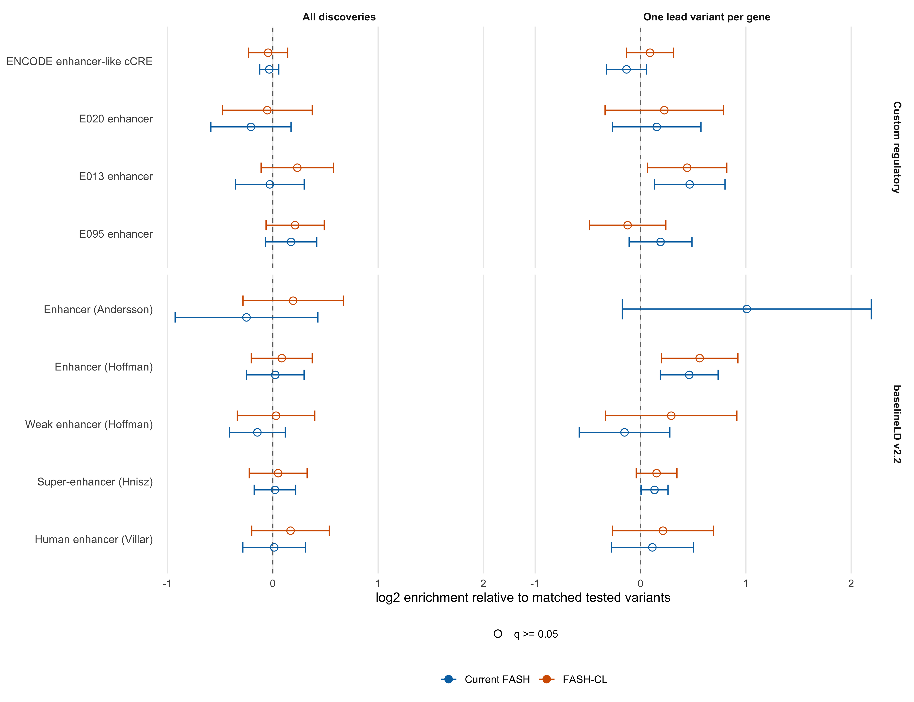
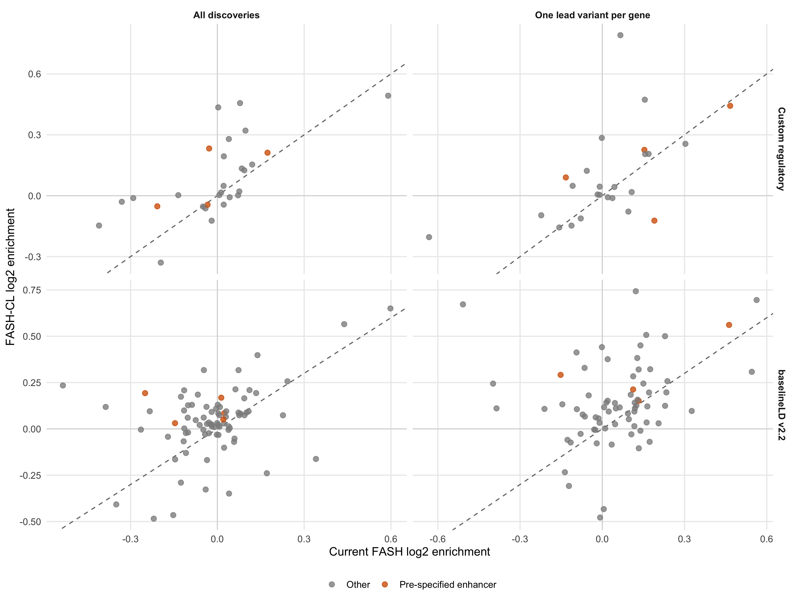
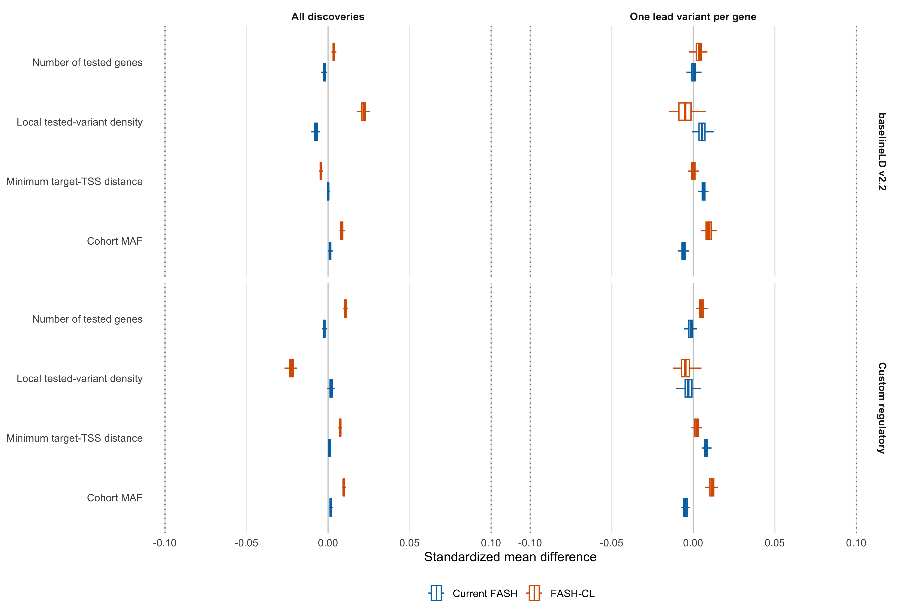

Last updated: 2026-08-08
Checks: 6 1
Knit directory: coderepo-local/
This reproducible R Markdown analysis was created with workflowr (version 1.7.2). The Checks tab describes the reproducibility checks that were applied when the results were created. The Past versions tab lists the development history.
The R Markdown is untracked by Git. To know which version of the R
Markdown file created these results, you’ll want to first commit it to
the Git repo. If you’re still working on the analysis, you can ignore
this warning. When you’re finished, you can run
wflow_publish to commit the R Markdown file and build the
HTML.
Great job! The global environment was empty. Objects defined in the global environment can affect the analysis in your R Markdown file in unknown ways. For reproduciblity it’s best to always run the code in an empty environment.
The command set.seed(20251109) was run prior to running
the code in the R Markdown file. Setting a seed ensures that any results
that rely on randomness, e.g. subsampling or permutations, are
reproducible.
Great job! Recording the operating system, R version, and package versions is critical for reproducibility.
Nice! There were no cached chunks for this analysis, so you can be confident that you successfully produced the results during this run.
Great job! Using relative paths to the files within your workflowr project makes it easier to run your code on other machines.
Great! You are using Git for version control. Tracking code development and connecting the code version to the results is critical for reproducibility.
The results in this page were generated with repository version 9fbd863. See the Past versions tab to see a history of the changes made to the R Markdown and HTML files.
Note that you need to be careful to ensure that all relevant files for
the analysis have been committed to Git prior to generating the results
(you can use wflow_publish or
wflow_git_commit). workflowr only checks the R Markdown
file, but you know if there are other scripts or data files that it
depends on. Below is the status of the Git repository when the results
were generated:
Ignored files:
Ignored: .DS_Store
Ignored: .Rhistory
Ignored: .Rproj.user/
Ignored: analysis/.DS_Store
Ignored: analysis/.Rhistory
Ignored: code/.DS_Store
Ignored: code/.Rhistory
Ignored: data/appendixB/
Ignored: data/dynamic_eQTL_real/
Ignored: data/revision_simulations/
Ignored: data/toy_example/
Ignored: output/dynamic_eQTL_real/
Ignored: output/pdf/
Ignored: output/revision_simulations/
Untracked files:
Untracked: Rplots.pdf
Untracked: analysis/revision_balanced_variant_thinning.rmd
Untracked: analysis/revision_combined_spiky_genotype_simulation.rmd
Untracked: analysis/revision_correlated_error_simulation.rmd
Untracked: analysis/revision_functional_testing_simulation.rmd
Untracked: analysis/revision_genotype_level_simulation.rmd
Untracked: analysis/revision_internal_baseline_ld_variant_enrichment.rmd
Untracked: analysis/revision_internal_correlated_likelihood_sensitivity.rmd
Untracked: analysis/revision_internal_fash_cl_variant_enrichment_comparison.rmd
Untracked: analysis/revision_internal_mashr_mean_z_null_correlation.rmd
Untracked: analysis/revision_internal_observational_null_set_pilot.rmd
Untracked: analysis/revision_internal_one_variant_per_gene_refit.rmd
Untracked: analysis/revision_internal_real_genotype_simulation.rmd
Untracked: analysis/revision_internal_targeted_broad_calibration.rmd
Untracked: analysis/revision_internal_variant_annotation_enrichment.rmd
Untracked: analysis/revision_internal_zero_intercept_correlation.rmd
Untracked: analysis/revision_ld_tagging_switch_example.rmd
Untracked: code/00_eQTLs_CL.R
Untracked: code/01_fash_CL.R
Untracked: code/01_fash_CL.sbatch
Untracked: code/09_penalty_sensitivity.R
Untracked: code/09_penalty_sensitivity.sbatch
Untracked: code/revision_simulations/
Untracked: fash_prior_comparison_order1_after.pdf
Untracked: fash_prior_comparison_order1_after.png
Untracked: fash_prior_comparison_order1_before.pdf
Untracked: fash_prior_comparison_order1_before.png
Untracked: fash_prior_comparison_order2_after.pdf
Untracked: fash_prior_comparison_order2_after.png
Untracked: fash_prior_comparison_order2_before.pdf
Untracked: fash_prior_comparison_order2_before.png
Unstaged changes:
Modified: .gitignore
Modified: analysis/dynamic_eQTL_real.rmd
Modified: analysis/index.Rmd
Modified: analysis/nonlinear_dynamic_eQTL_real.Rmd
Modified: code/README.md
Modified: output/toy_example/toy_example_11.pdf
Modified: output/toy_example/toy_example_12.pdf
Modified: output/toy_example/toy_example_21.pdf
Modified: output/toy_example/toy_example_22.pdf
Note that any generated files, e.g. HTML, png, CSS, etc., are not included in this status report because it is ok for generated content to have uncommitted changes.
There are no past versions. Publish this analysis with
wflow_publish() to start tracking its development.
This analysis asks two related questions:
Current FASH adjusts expression for five PCs estimated separately at each time point. FASH-CL adjusts for five PCs estimated after collapsing expression to the cell-line level. Both comparisons use the order-1 FASH dynamic-eQTL test, the BF-based prior correction, and cumulative-lfdr FDR 0.05.
Provisional readout. For FASH-CL, one lead variant per gene has the larger median enhancer point estimate in both annotation systems: 1.06x to 1.12x in the custom panel and 1.06x to 1.19x in baselineLD. FASH-CL has larger median enhancer point estimates for all discoveries in both systems. Under one-lead-per-gene selection, FASH-CL is larger in baselineLD (1.19x versus 1.10x), whereas current FASH is slightly larger in the custom panel (1.13x versus 1.12x). Thus the one-lead pattern extends to FASH-CL, but the head-to-head method result is mixed rather than a uniform FASH-CL or current-FASH advantage.
No pre-specified enhancer reaches within-set BH q below 0.05; the smallest is 0.056. These are exploratory point-estimate patterns, not thresholded discoveries or formal tests of a difference between methods.
For each method, the all-discovery set is collapsed to unique rsIDs. The one-lead set retains the discovered pair with the lowest lfdr for each gene, using rsID as the deterministic tie-breaker, and is then deduplicated to unique rsIDs for enrichment.
render_scrollable_table(
discovery_table,
align = "llrrr",
minimum_width = "880px"
)| Method | Selection strategy | Gene-variant pairs | Unique variants | Unique genes |
|---|---|---|---|---|
| Current FASH | All discoveries | 9205 | 9139 | 1177 |
| Current FASH | One lead variant per gene | 1177 | 1170 | 1177 |
| FASH-CL | All discoveries | 5393 | 5361 | 686 |
| FASH-CL | One lead variant per gene | 686 | 686 | 686 |
render_scrollable_table(
overlap_table,
align = "lrrrrr",
minimum_width = "820px"
)| Selection strategy | Current variants | FASH-CL variants | Intersection | Union | Jaccard |
|---|---|---|---|---|---|
| All discoveries | 9139 | 5361 | 1593 | 12907 | 0.123 |
| One lead variant per gene | 1170 | 686 | 99 | 1757 | 0.056 |
FASH-CL yields fewer calls: 5,393 pairs and 5,361 unique variants, compared with 9,205 pairs and 9,139 unique variants for current FASH. The one-lead sets contain 686 and 1,170 unique variants, respectively. Their low Jaccard overlap shows that this is not merely the same discoveries with slightly different scores; the PC construction materially changes set membership.
The original FASH-CL fit did not retain a BF-adjusted object. The
analysis therefore recomputes the same two mixture-optimization stages
used by fashr::BF_update(), while discarding unused
portions of the 2.4-GiB fit before likelihood expansion. This keeps the
calculation laptop-scale.
The stored current-FASH lfdr is reconstructed from its retained null and conditional-alternative weights to numerical precision. Re-running the historical mixture optimizer produces nearly identical, but not bitwise identical, threshold-edge calls; the retained current adjusted fit remains the authoritative current-FASH result.
render_scrollable_table(
bf_validation_table,
align = "lr",
minimum_width = "760px"
)| Diagnostic | Value |
|---|---|
| Stored current lfdr reconstruction: maximum absolute difference | 1.665e-15 |
| Current optimizer rerun: null-weight absolute difference | 0e+00 |
| Current optimizer rerun: mean lfdr absolute difference | 4.192e-05 |
| Current optimizer rerun: lfdr correlation | 0.9999991 |
| Current optimizer rerun: discovery-call Jaccard | 0.998372 |
The custom regulatory matrix covers the entire tested-variant universe. baselineLD v2.2 uses its 1000G EUR rsID coverage, so every discovery set and the matched-control universe are restricted before matching.
render_scrollable_table(
coverage_table,
align = "lllrrr",
minimum_width = "980px"
)| Annotation system | Method | Selection strategy | Original variants | Covered variants | Coverage |
|---|---|---|---|---|---|
| Custom regulatory | Current FASH | All discoveries | 9139 | 9139 | 100.0% |
| baselineLD v2.2 | Current FASH | All discoveries | 9139 | 7075 | 77.4% |
| Custom regulatory | Current FASH | One lead variant per gene | 1170 | 1170 | 100.0% |
| baselineLD v2.2 | Current FASH | One lead variant per gene | 1170 | 918 | 78.5% |
| Custom regulatory | FASH-CL | All discoveries | 5361 | 5361 | 100.0% |
| baselineLD v2.2 | FASH-CL | All discoveries | 5361 | 3841 | 71.6% |
| Custom regulatory | FASH-CL | One lead variant per gene | 686 | 686 | 100.0% |
| baselineLD v2.2 | FASH-CL | One lead variant per gene | 686 | 541 | 78.9% |
The custom panel contains ENCODE enhancer-like cCRE plus E020, E013, and E095 Roadmap enhancers. The baselineLD panel contains Andersson enhancer, Hoffman enhancer, Hoffman weak enhancer, Hnisz super-enhancer, and Villar human enhancer. These categories were fixed before examining the FASH-CL results.
Each selected variant is matched to five non-selected tested variants on chromosome, cohort MAF, minimum target-gene TSS distance, local tested-variant density, and number of tested genes. Matching is repeated over 100 fixed seeds. Intervals are delete-one-autosome jackknife 95% intervals.
plot_enhancer_enrichment()
Figure 1. Pre-specified enhancer enrichment for current FASH and FASH-CL, using all discoveries or one lead variant per gene. Enrichment is relative to separately matched tested variants. Error bars are delete-one-autosome 95% intervals. The FASH-CL one-lead Andersson estimate is omitted because fewer than ten selected variants overlap that sparse annotation.
For FASH-CL, the one-lead strategy raises the median enhancer point estimate in both systems. In baselineLD, FASH-CL Hoffman enhancer is 1.48-fold with a fold-scale interval of 1.15–1.90 and q = 0.180.
The method comparison depends on the panel. FASH-CL is descriptively stronger for all discoveries in both panels and for baselineLD under one-lead selection. In the custom one-lead panel, current FASH and FASH-CL are close: current FASH is slightly higher by the panel median and for E013, whereas FASH-CL is higher for ENCODE enhancer-like cCRE and E020.
render_scrollable_table(
enhancer_summary_table,
digits = 4L,
minimum_width = "1260px"
)| Annotation system | Method | Selection strategy | Finite enhancers | Positive enhancers | Median fold enrichment | Maximum fold enrichment | Minimum nominal p | Minimum within-set BH q |
|---|---|---|---|---|---|---|---|---|
| baselineLD v2.2 | Current FASH | All discoveries | 5 | 3 | 1.0094 | 1.0167 | 0.2792 | 0.9888 |
| baselineLD v2.2 | Current FASH | One lead variant per gene | 5 | 4 | 1.0963 | 2.0121 | 0.0009 | 0.0723 |
| baselineLD v2.2 | FASH-CL | All discoveries | 5 | 5 | 1.0606 | 1.1431 | 0.3701 | 0.9507 |
| baselineLD v2.2 | FASH-CL | One lead variant per gene | 4 | 4 | 1.1910 | 1.4755 | 0.0025 | 0.1797 |
| Custom regulatory | Current FASH | All discoveries | 4 | 1 | 0.9786 | 1.1277 | 0.1646 | 0.5617 |
| Custom regulatory | Current FASH | One lead variant per gene | 4 | 3 | 1.1265 | 1.3817 | 0.0064 | 0.0558 |
| Custom regulatory | FASH-CL | All discoveries | 4 | 2 | 1.0597 | 1.1750 | 0.1328 | 0.8141 |
| Custom regulatory | FASH-CL | One lead variant per gene | 4 | 3 | 1.1156 | 1.3593 | 0.0211 | 0.2637 |
render_scrollable_table(
enhancer_numeric_table,
digits = 4L,
minimum_width = "1580px"
)| Annotation system | Method | Selection strategy | Enhancer annotation | Selected overlap | Selected total | Fold enrichment | Fold CI lower | Fold CI upper | Nominal p | Within-set BH q |
|---|---|---|---|---|---|---|---|---|---|---|
| Custom regulatory | Current FASH | All discoveries | ENCODE enhancer-like cCRE | 1500 | 9139 | 0.9769 | 0.9175 | 1.0400 | 0.4640 | 0.8786 |
| Custom regulatory | Current FASH | All discoveries | E020 enhancer | 288 | 9139 | 0.8659 | 0.6651 | 1.1275 | 0.2850 | 0.6359 |
| Custom regulatory | Current FASH | All discoveries | E013 enhancer | 543 | 9139 | 0.9804 | 0.7820 | 1.2292 | 0.8641 | 0.9466 |
| Custom regulatory | Current FASH | All discoveries | E095 enhancer | 790 | 9139 | 1.1277 | 0.9519 | 1.3359 | 0.1646 | 0.5617 |
| Custom regulatory | Current FASH | One lead variant per gene | ENCODE enhancer-like cCRE | 177 | 1170 | 0.9119 | 0.7994 | 1.0404 | 0.1704 | 0.4028 |
| Custom regulatory | Current FASH | One lead variant per gene | E020 enhancer | 44 | 1170 | 1.1123 | 0.8314 | 1.4882 | 0.4734 | 0.7759 |
| Custom regulatory | Current FASH | One lead variant per gene | E013 enhancer | 93 | 1170 | 1.3817 | 1.0950 | 1.7436 | 0.0064 | 0.0558 |
| Custom regulatory | Current FASH | One lead variant per gene | E095 enhancer | 105 | 1170 | 1.1408 | 0.9275 | 1.4030 | 0.2122 | 0.4598 |
| Custom regulatory | FASH-CL | All discoveries | ENCODE enhancer-like cCRE | 867 | 5361 | 0.9697 | 0.8528 | 1.1026 | 0.6387 | 0.9849 |
| Custom regulatory | FASH-CL | All discoveries | E020 enhancer | 185 | 5361 | 0.9645 | 0.7175 | 1.2964 | 0.8106 | 0.9849 |
| Custom regulatory | FASH-CL | All discoveries | E013 enhancer | 346 | 5361 | 1.1750 | 0.9257 | 1.4914 | 0.1850 | 0.8324 |
| Custom regulatory | FASH-CL | All discoveries | E095 enhancer | 440 | 5361 | 1.1581 | 0.9564 | 1.4023 | 0.1328 | 0.8141 |
| Custom regulatory | FASH-CL | One lead variant per gene | ENCODE enhancer-like cCRE | 122 | 686 | 1.0643 | 0.9122 | 1.2418 | 0.4284 | 0.7196 |
| Custom regulatory | FASH-CL | One lead variant per gene | E020 enhancer | 28 | 686 | 1.1694 | 0.7916 | 1.7274 | 0.4318 | 0.7196 |
| Custom regulatory | FASH-CL | One lead variant per gene | E013 enhancer | 52 | 686 | 1.3593 | 1.0472 | 1.7644 | 0.0211 | 0.2637 |
| Custom regulatory | FASH-CL | One lead variant per gene | E095 enhancer | 46 | 686 | 0.9184 | 0.7141 | 1.1812 | 0.5074 | 0.7462 |
| baselineLD v2.2 | Current FASH | All discoveries | Enhancer (Andersson) | 47 | 7075 | 0.8410 | 0.5258 | 1.3450 | 0.4698 | 0.9888 |
| baselineLD v2.2 | Current FASH | All discoveries | Enhancer (Hoffman) | 651 | 7075 | 1.0167 | 0.8413 | 1.2286 | 0.8638 | 0.9888 |
| baselineLD v2.2 | Current FASH | All discoveries | Super-enhancer (Hnisz) | 2388 | 7075 | 1.0144 | 0.8848 | 1.1629 | 0.8378 | 0.9888 |
| baselineLD v2.2 | Current FASH | All discoveries | Weak enhancer (Hoffman) | 249 | 7075 | 0.9035 | 0.7518 | 1.0858 | 0.2792 | 0.9888 |
| baselineLD v2.2 | Current FASH | All discoveries | Human enhancer (Villar) | 434 | 7075 | 1.0094 | 0.8209 | 1.2412 | 0.9294 | 0.9888 |
| baselineLD v2.2 | Current FASH | One lead variant per gene | Enhancer (Andersson) | 10 | 918 | 2.0121 | 0.8870 | 4.5644 | 0.0943 | 0.3905 |
| baselineLD v2.2 | Current FASH | One lead variant per gene | Enhancer (Hoffman) | 110 | 918 | 1.3780 | 1.1396 | 1.6663 | 0.0009 | 0.0723 |
| baselineLD v2.2 | Current FASH | One lead variant per gene | Super-enhancer (Hnisz) | 332 | 918 | 1.0963 | 1.0032 | 1.1980 | 0.0422 | 0.3065 |
| baselineLD v2.2 | Current FASH | One lead variant per gene | Weak enhancer (Hoffman) | 32 | 918 | 0.9000 | 0.6679 | 1.2127 | 0.4886 | 0.8749 |
| baselineLD v2.2 | Current FASH | One lead variant per gene | Human enhancer (Villar) | 61 | 918 | 1.0811 | 0.8247 | 1.4171 | 0.5725 | 0.9207 |
| baselineLD v2.2 | FASH-CL | All discoveries | Enhancer (Andersson) | 24 | 3841 | 1.1431 | 0.8220 | 1.5896 | 0.4267 | 0.9507 |
| baselineLD v2.2 | FASH-CL | All discoveries | Enhancer (Hoffman) | 363 | 3841 | 1.0606 | 0.8680 | 1.2960 | 0.5649 | 0.9507 |
| baselineLD v2.2 | FASH-CL | All discoveries | Super-enhancer (Hnisz) | 1297 | 3841 | 1.0360 | 0.8564 | 1.2532 | 0.7160 | 0.9507 |
| baselineLD v2.2 | FASH-CL | All discoveries | Weak enhancer (Hoffman) | 146 | 3841 | 1.0216 | 0.7916 | 1.3184 | 0.8695 | 0.9507 |
| baselineLD v2.2 | FASH-CL | All discoveries | Human enhancer (Villar) | 240 | 3841 | 1.1238 | 0.8706 | 1.4506 | 0.3701 | 0.9507 |
| baselineLD v2.2 | FASH-CL | One lead variant per gene | Enhancer (Andersson) | 8 | 541 | NA | NA | NA | NA | NA |
| baselineLD v2.2 | FASH-CL | One lead variant per gene | Enhancer (Hoffman) | 66 | 541 | 1.4755 | 1.1471 | 1.8980 | 0.0025 | 0.1797 |
| baselineLD v2.2 | FASH-CL | One lead variant per gene | Super-enhancer (Hnisz) | 200 | 541 | 1.1113 | 0.9717 | 1.2708 | 0.1233 | 0.5920 |
| baselineLD v2.2 | FASH-CL | One lead variant per gene | Weak enhancer (Hoffman) | 26 | 541 | 1.2240 | 0.7949 | 1.8848 | 0.3588 | 0.6912 |
| baselineLD v2.2 | FASH-CL | One lead variant per gene | Human enhancer (Villar) | 38 | 541 | 1.1589 | 0.8309 | 1.6163 | 0.3850 | 0.6912 |
The identity line below provides a descriptive current-versus-CL comparison for every annotation. Points above the line have a larger FASH-CL estimate; points below have a larger current-FASH estimate. Because the discovery sets differ in size and membership, this plot is not a paired significance test.
plot_method_scatter()
Figure 2. Current-FASH versus FASH-CL point estimates across all retained annotations. Orange points are the pre-specified enhancer categories. The dashed identity line marks equal point estimates.
render_scrollable_table(
full_results_table,
digits = 5L,
minimum_width = "1580px"
)| Annotation system | Method | Selection strategy | Annotation | Selected overlap | Selected total | Fold enrichment | log2 enrichment | log2 CI lower | log2 CI upper | Nominal p | Within-set BH q |
|---|---|---|---|---|---|---|---|---|---|---|---|
| Custom regulatory | Current FASH | All discoveries | GENCODE promoter +/-2 kb | 1335 | 9139 | 1.00475 | 0.00683 | -0.08796 | 0.10163 | 0.88765 | 0.94663 |
| Custom regulatory | Current FASH | All discoveries | GENCODE exon | 790 | 9139 | 1.01564 | 0.02239 | -0.17426 | 0.21905 | 0.82338 | 0.94663 |
| Custom regulatory | Current FASH | All discoveries | GENCODE intron | 5776 | 9139 | 1.06672 | 0.09318 | 0.01017 | 0.17620 | 0.02780 | 0.16122 |
| Custom regulatory | Current FASH | All discoveries | GENCODE gene body | 6566 | 9139 | 1.06031 | 0.08448 | 0.01081 | 0.15815 | 0.02460 | 0.16122 |
| Custom regulatory | Current FASH | All discoveries | GENCODE intergenic | 2573 | 9139 | 0.87325 | -0.19553 | -0.38009 | -0.01097 | 0.03785 | 0.18295 |
| Custom regulatory | Current FASH | All discoveries | ENCODE cCRE promoter-like | 895 | 9139 | 1.08700 | 0.12035 | -0.05306 | 0.29376 | 0.17373 | 0.56169 |
| Custom regulatory | Current FASH | All discoveries | ENCODE cCRE CTCF-only | 36 | 9139 | 0.97192 | -0.04109 | -0.78664 | 0.70447 | 0.91398 | 0.94663 |
| Custom regulatory | Current FASH | All discoveries | ENCODE cCRE enhancer-like | 1500 | 9139 | 0.97686 | -0.03378 | -0.12419 | 0.05663 | 0.46401 | 0.87860 |
| Custom regulatory | Current FASH | All discoveries | Roadmap E020 iPS-20b: Quiescent | 3517 | 9139 | 1.05088 | 0.07160 | -0.03265 | 0.17585 | 0.17826 | 0.56169 |
| Custom regulatory | Current FASH | All discoveries | Roadmap E020 iPS-20b: Heterochromatin/repeats | 337 | 9139 | 1.02782 | 0.03958 | -0.44253 | 0.52169 | 0.87216 | 0.94663 |
| Custom regulatory | Current FASH | All discoveries | Roadmap E020 iPS-20b: Polycomb-repressed | 731 | 9139 | 0.81744 | -0.29081 | -0.54553 | -0.03608 | 0.02524 | 0.16122 |
| Custom regulatory | Current FASH | All discoveries | Roadmap E020 iPS-20b: Bivalent/poised | 162 | 9139 | 1.06965 | 0.09713 | -0.55265 | 0.74691 | 0.76953 | 0.94663 |
| Custom regulatory | Current FASH | All discoveries | Roadmap E020 iPS-20b: Active TSS | 387 | 9139 | 0.91061 | -0.13510 | -0.36335 | 0.09316 | 0.24603 | 0.59457 |
| Custom regulatory | Current FASH | All discoveries | Roadmap E020 iPS-20b: Transcribed | 3717 | 9139 | 1.01526 | 0.02185 | -0.10376 | 0.14746 | 0.73311 | 0.94663 |
| Custom regulatory | Current FASH | All discoveries | Roadmap E020 iPS-20b: Enhancer | 288 | 9139 | 0.86594 | -0.20767 | -0.58841 | 0.17307 | 0.28505 | 0.63588 |
| Custom regulatory | Current FASH | All discoveries | Roadmap E013 hESC-derived CD56+ mesoderm: Quiescent | 2948 | 9139 | 0.98644 | -0.01970 | -0.19027 | 0.15087 | 0.82094 | 0.94663 |
| Custom regulatory | Current FASH | All discoveries | Roadmap E013 hESC-derived CD56+ mesoderm: Active TSS | 387 | 9139 | 1.01499 | 0.02147 | -0.14654 | 0.18947 | 0.80224 | 0.94663 |
| Custom regulatory | Current FASH | All discoveries | Roadmap E013 hESC-derived CD56+ mesoderm: Enhancer | 543 | 9139 | 0.98044 | -0.02850 | -0.35474 | 0.29774 | 0.86407 | 0.94663 |
| Custom regulatory | Current FASH | All discoveries | Roadmap E013 hESC-derived CD56+ mesoderm: Polycomb-repressed | 533 | 9139 | 0.75308 | -0.40913 | -0.76613 | -0.05213 | 0.02469 | 0.16122 |
| Custom regulatory | Current FASH | All discoveries | Roadmap E013 hESC-derived CD56+ mesoderm: Heterochromatin/repeats | 439 | 9139 | 1.00206 | 0.00297 | -0.68446 | 0.69041 | 0.99323 | 0.99323 |
| Custom regulatory | Current FASH | All discoveries | Roadmap E013 hESC-derived CD56+ mesoderm: Transcribed | 4258 | 9139 | 1.05392 | 0.07577 | -0.03849 | 0.19003 | 0.19368 | 0.56169 |
| Custom regulatory | Current FASH | All discoveries | Roadmap E013 hESC-derived CD56+ mesoderm: Bivalent/poised | 31 | 9139 | 1.05579 | 0.07832 | -0.55705 | 0.71368 | 0.80909 | 0.94663 |
| Custom regulatory | Current FASH | All discoveries | Roadmap E095 left ventricle: Quiescent | 2948 | 9139 | 0.96610 | -0.04975 | -0.20196 | 0.10247 | 0.52179 | 0.89011 |
| Custom regulatory | Current FASH | All discoveries | Roadmap E095 left ventricle: Active TSS | 368 | 9139 | 1.00898 | 0.01290 | -0.22045 | 0.24625 | 0.91371 | 0.94663 |
| Custom regulatory | Current FASH | All discoveries | Roadmap E095 left ventricle: Transcribed | 4229 | 9139 | 1.02991 | 0.04252 | -0.07676 | 0.16179 | 0.48474 | 0.87860 |
| Custom regulatory | Current FASH | All discoveries | Roadmap E095 left ventricle: Polycomb-repressed | 619 | 9139 | 0.79534 | -0.33036 | -0.57975 | -0.08096 | 0.00942 | 0.16122 |
| Custom regulatory | Current FASH | All discoveries | Roadmap E095 left ventricle: Heterochromatin/repeats | 172 | 9139 | 1.50560 | 0.59034 | -0.61872 | 1.79940 | 0.33857 | 0.70132 |
| Custom regulatory | Current FASH | All discoveries | Roadmap E095 left ventricle: Enhancer | 790 | 9139 | 1.12765 | 0.17332 | -0.07113 | 0.41777 | 0.16462 | 0.56169 |
| Custom regulatory | Current FASH | All discoveries | Roadmap E095 left ventricle: Bivalent/poised | 13 | 9139 | 0.55160 | -0.85832 | -2.26023 | 0.54359 | 0.23014 | 0.59457 |
| Custom regulatory | Current FASH | One lead variant per gene | GENCODE promoter +/-2 kb | 168 | 1170 | 0.96158 | -0.05652 | -0.25775 | 0.14471 | 0.58198 | 0.85156 |
| Custom regulatory | Current FASH | One lead variant per gene | GENCODE exon | 109 | 1170 | 1.02592 | 0.03692 | -0.19940 | 0.27324 | 0.75945 | 0.88723 |
| Custom regulatory | Current FASH | One lead variant per gene | GENCODE intron | 675 | 1170 | 0.98814 | -0.01721 | -0.08790 | 0.05347 | 0.63313 | 0.85156 |
| Custom regulatory | Current FASH | One lead variant per gene | GENCODE gene body | 784 | 1170 | 0.99322 | -0.00981 | -0.05764 | 0.03803 | 0.68779 | 0.85156 |
| Custom regulatory | Current FASH | One lead variant per gene | GENCODE intergenic | 386 | 1170 | 1.01405 | 0.02013 | -0.07652 | 0.11677 | 0.68312 | 0.85156 |
| Custom regulatory | Current FASH | One lead variant per gene | ENCODE cCRE promoter-like | 124 | 1170 | 1.12431 | 0.16904 | -0.04730 | 0.38537 | 0.12565 | 0.40278 |
| Custom regulatory | Current FASH | One lead variant per gene | ENCODE cCRE CTCF-only | 6 | 1170 | NA | NA | NA | NA | NA | NA |
| Custom regulatory | Current FASH | One lead variant per gene | ENCODE cCRE enhancer-like | 177 | 1170 | 0.91195 | -0.13298 | -0.32310 | 0.05714 | 0.17041 | 0.40278 |
| Custom regulatory | Current FASH | One lead variant per gene | Roadmap E020 iPS-20b: Quiescent | 478 | 1170 | 1.07714 | 0.10721 | 0.03085 | 0.18357 | 0.00593 | 0.05580 |
| Custom regulatory | Current FASH | One lead variant per gene | Roadmap E020 iPS-20b: Heterochromatin/repeats | 29 | 1170 | 0.64528 | -0.63201 | -1.26976 | 0.00574 | 0.05209 | 0.22573 |
| Custom regulatory | Current FASH | One lead variant per gene | Roadmap E020 iPS-20b: Polycomb-repressed | 143 | 1170 | 1.23393 | 0.30326 | 0.06515 | 0.54136 | 0.01255 | 0.06525 |
| Custom regulatory | Current FASH | One lead variant per gene | Roadmap E020 iPS-20b: Bivalent/poised | 19 | 1170 | 1.04683 | 0.06603 | -0.40804 | 0.54010 | 0.78486 | 0.88723 |
| Custom regulatory | Current FASH | One lead variant per gene | Roadmap E020 iPS-20b: Active TSS | 50 | 1170 | 0.92775 | -0.10820 | -0.58585 | 0.36945 | 0.65706 | 0.85156 |
| Custom regulatory | Current FASH | One lead variant per gene | Roadmap E020 iPS-20b: Transcribed | 407 | 1170 | 0.89687 | -0.15703 | -0.22311 | -0.09096 | 0.00000 | 0.00008 |
| Custom regulatory | Current FASH | One lead variant per gene | Roadmap E020 iPS-20b: Enhancer | 44 | 1170 | 1.11235 | 0.15361 | -0.26633 | 0.57354 | 0.47341 | 0.77594 |
| Custom regulatory | Current FASH | One lead variant per gene | Roadmap E013 hESC-derived CD56+ mesoderm: Quiescent | 418 | 1170 | 1.03108 | 0.04415 | -0.04049 | 0.12878 | 0.30658 | 0.61315 |
| Custom regulatory | Current FASH | One lead variant per gene | Roadmap E013 hESC-derived CD56+ mesoderm: Active TSS | 48 | 1170 | 0.99879 | -0.00174 | -0.42865 | 0.42517 | 0.99362 | 0.99362 |
| Custom regulatory | Current FASH | One lead variant per gene | Roadmap E013 hESC-derived CD56+ mesoderm: Enhancer | 93 | 1170 | 1.38175 | 0.46650 | 0.13091 | 0.80208 | 0.00644 | 0.05580 |
| Custom regulatory | Current FASH | One lead variant per gene | Roadmap E013 hESC-derived CD56+ mesoderm: Polycomb-repressed | 99 | 1170 | 1.06817 | 0.09514 | -0.16738 | 0.35766 | 0.47750 | 0.77594 |
| Custom regulatory | Current FASH | One lead variant per gene | Roadmap E013 hESC-derived CD56+ mesoderm: Heterochromatin/repeats | 47 | 1170 | 0.85694 | -0.22273 | -0.53924 | 0.09379 | 0.16783 | 0.40278 |
| Custom regulatory | Current FASH | One lead variant per gene | Roadmap E013 hESC-derived CD56+ mesoderm: Transcribed | 461 | 1170 | 0.92509 | -0.11233 | -0.19633 | -0.02832 | 0.00877 | 0.05701 |
| Custom regulatory | Current FASH | One lead variant per gene | Roadmap E013 hESC-derived CD56+ mesoderm: Bivalent/poised | 4 | 1170 | NA | NA | NA | NA | NA | NA |
| Custom regulatory | Current FASH | One lead variant per gene | Roadmap E095 left ventricle: Quiescent | 398 | 1170 | 0.99354 | -0.00935 | -0.11415 | 0.09545 | 0.86117 | 0.93294 |
| Custom regulatory | Current FASH | One lead variant per gene | Roadmap E095 left ventricle: Active TSS | 53 | 1170 | 1.11354 | 0.15515 | -0.23564 | 0.54594 | 0.43648 | 0.77594 |
| Custom regulatory | Current FASH | One lead variant per gene | Roadmap E095 left ventricle: Transcribed | 487 | 1170 | 0.94702 | -0.07853 | -0.18132 | 0.02427 | 0.13434 | 0.40278 |
| Custom regulatory | Current FASH | One lead variant per gene | Roadmap E095 left ventricle: Polycomb-repressed | 109 | 1170 | 1.11445 | 0.15633 | -0.05212 | 0.36479 | 0.14158 | 0.40278 |
| Custom regulatory | Current FASH | One lead variant per gene | Roadmap E095 left ventricle: Heterochromatin/repeats | 16 | 1170 | 1.07657 | 0.10644 | -1.54300 | 1.75588 | 0.89935 | 0.93532 |
| Custom regulatory | Current FASH | One lead variant per gene | Roadmap E095 left ventricle: Enhancer | 105 | 1170 | 1.14076 | 0.18999 | -0.10853 | 0.48852 | 0.21224 | 0.45985 |
| Custom regulatory | Current FASH | One lead variant per gene | Roadmap E095 left ventricle: Bivalent/poised | 2 | 1170 | NA | NA | NA | NA | NA | NA |
| Custom regulatory | FASH-CL | All discoveries | GENCODE promoter +/-2 kb | 797 | 5361 | 1.00223 | 0.00321 | -0.20302 | 0.20944 | 0.97565 | 0.98489 |
| Custom regulatory | FASH-CL | All discoveries | GENCODE exon | 522 | 5361 | 1.14392 | 0.19399 | -0.06714 | 0.45512 | 0.14537 | 0.81408 |
| Custom regulatory | FASH-CL | All discoveries | GENCODE intron | 3463 | 5361 | 1.09057 | 0.12508 | 0.02649 | 0.22367 | 0.01290 | 0.18060 |
| Custom regulatory | FASH-CL | All discoveries | GENCODE gene body | 3985 | 5361 | 1.09727 | 0.13392 | 0.03985 | 0.22799 | 0.00527 | 0.14748 |
| Custom regulatory | FASH-CL | All discoveries | GENCODE intergenic | 1376 | 5361 | 0.79571 | -0.32968 | -0.60732 | -0.05204 | 0.01995 | 0.18617 |
| Custom regulatory | FASH-CL | All discoveries | ENCODE cCRE promoter-like | 532 | 5361 | 1.11233 | 0.15359 | -0.08555 | 0.39273 | 0.20809 | 0.83236 |
| Custom regulatory | FASH-CL | All discoveries | ENCODE cCRE CTCF-only | 23 | 5361 | 0.95769 | -0.06236 | -0.78599 | 0.66126 | 0.86587 | 0.98489 |
| Custom regulatory | FASH-CL | All discoveries | ENCODE cCRE enhancer-like | 867 | 5361 | 0.96970 | -0.04439 | -0.22971 | 0.14092 | 0.63871 | 0.98489 |
| Custom regulatory | FASH-CL | All discoveries | Roadmap E020 iPS-20b: Quiescent | 2041 | 5361 | 1.00131 | 0.00189 | -0.14247 | 0.14625 | 0.97950 | 0.98489 |
| Custom regulatory | FASH-CL | All discoveries | Roadmap E020 iPS-20b: Heterochromatin/repeats | 272 | 5361 | 1.21356 | 0.27925 | -0.47187 | 1.03036 | 0.46620 | 0.98489 |
| Custom regulatory | FASH-CL | All discoveries | Roadmap E020 iPS-20b: Polycomb-repressed | 538 | 5361 | 0.99194 | -0.01168 | -0.52798 | 0.50463 | 0.96464 | 0.98489 |
| Custom regulatory | FASH-CL | All discoveries | Roadmap E020 iPS-20b: Bivalent/poised | 106 | 5361 | 1.24894 | 0.32070 | -0.49180 | 1.13321 | 0.43915 | 0.98489 |
| Custom regulatory | FASH-CL | All discoveries | Roadmap E020 iPS-20b: Active TSS | 255 | 5361 | 1.00178 | 0.00257 | -0.26342 | 0.26856 | 0.98489 | 0.98489 |
| Custom regulatory | FASH-CL | All discoveries | Roadmap E020 iPS-20b: Transcribed | 1964 | 5361 | 0.96991 | -0.04408 | -0.25776 | 0.16960 | 0.68595 | 0.98489 |
| Custom regulatory | FASH-CL | All discoveries | Roadmap E020 iPS-20b: Enhancer | 185 | 5361 | 0.96448 | -0.05218 | -0.47892 | 0.37455 | 0.81058 | 0.98489 |
| Custom regulatory | FASH-CL | All discoveries | Roadmap E013 hESC-derived CD56+ mesoderm: Quiescent | 1670 | 5361 | 0.91814 | -0.12321 | -0.36181 | 0.11538 | 0.31146 | 0.98489 |
| Custom regulatory | FASH-CL | All discoveries | Roadmap E013 hESC-derived CD56+ mesoderm: Active TSS | 239 | 5361 | 1.03420 | 0.04852 | -0.25677 | 0.35381 | 0.75542 | 0.98489 |
| Custom regulatory | FASH-CL | All discoveries | Roadmap E013 hESC-derived CD56+ mesoderm: Enhancer | 346 | 5361 | 1.17502 | 0.23268 | -0.11135 | 0.57671 | 0.18496 | 0.83236 |
| Custom regulatory | FASH-CL | All discoveries | Roadmap E013 hESC-derived CD56+ mesoderm: Polycomb-repressed | 406 | 5361 | 0.90311 | -0.14702 | -0.70393 | 0.40989 | 0.60486 | 0.98489 |
| Custom regulatory | FASH-CL | All discoveries | Roadmap E013 hESC-derived CD56+ mesoderm: Heterochromatin/repeats | 358 | 5361 | 1.35201 | 0.43511 | -0.55099 | 1.42121 | 0.38713 | 0.98489 |
| Custom regulatory | FASH-CL | All discoveries | Roadmap E013 hESC-derived CD56+ mesoderm: Transcribed | 2319 | 5361 | 1.01469 | 0.02103 | -0.17613 | 0.21820 | 0.83438 | 0.98489 |
| Custom regulatory | FASH-CL | All discoveries | Roadmap E013 hESC-derived CD56+ mesoderm: Bivalent/poised | 23 | 5361 | 1.37199 | 0.45627 | -0.85361 | 1.76614 | 0.49478 | 0.98489 |
| Custom regulatory | FASH-CL | All discoveries | Roadmap E095 left ventricle: Quiescent | 1729 | 5361 | 0.96355 | -0.05357 | -0.21530 | 0.10816 | 0.51619 | 0.98489 |
| Custom regulatory | FASH-CL | All discoveries | Roadmap E095 left ventricle: Active TSS | 226 | 5361 | 1.01081 | 0.01551 | -0.27802 | 0.30903 | 0.91753 | 0.98489 |
| Custom regulatory | FASH-CL | All discoveries | Roadmap E095 left ventricle: Transcribed | 2360 | 5361 | 0.99462 | -0.00779 | -0.19425 | 0.17867 | 0.93475 | 0.98489 |
| Custom regulatory | FASH-CL | All discoveries | Roadmap E095 left ventricle: Polycomb-repressed | 495 | 5361 | 0.97945 | -0.02995 | -0.66965 | 0.60974 | 0.92688 | 0.98489 |
| Custom regulatory | FASH-CL | All discoveries | Roadmap E095 left ventricle: Heterochromatin/repeats | 104 | 5361 | 1.40696 | 0.49259 | -2.05066 | 3.03584 | 0.70423 | 0.98489 |
| Custom regulatory | FASH-CL | All discoveries | Roadmap E095 left ventricle: Enhancer | 440 | 5361 | 1.15808 | 0.21174 | -0.06435 | 0.48783 | 0.13280 | 0.81408 |
| Custom regulatory | FASH-CL | All discoveries | Roadmap E095 left ventricle: Bivalent/poised | 7 | 5361 | NA | NA | NA | NA | NA | NA |
| Custom regulatory | FASH-CL | One lead variant per gene | GENCODE promoter +/-2 kb | 110 | 686 | 1.08859 | 0.12246 | -0.14462 | 0.38954 | 0.36881 | 0.71965 |
| Custom regulatory | FASH-CL | One lead variant per gene | GENCODE exon | 54 | 686 | 0.99195 | -0.01165 | -0.47188 | 0.44857 | 0.96041 | 0.96041 |
| Custom regulatory | FASH-CL | One lead variant per gene | GENCODE intron | 403 | 686 | 1.00417 | 0.00601 | -0.09476 | 0.10677 | 0.90701 | 0.96041 |
| Custom regulatory | FASH-CL | One lead variant per gene | GENCODE gene body | 457 | 686 | 1.00271 | 0.00391 | -0.07931 | 0.08713 | 0.92668 | 0.96041 |
| Custom regulatory | FASH-CL | One lead variant per gene | GENCODE intergenic | 229 | 686 | 0.99463 | -0.00777 | -0.17232 | 0.15679 | 0.92630 | 0.96041 |
| Custom regulatory | FASH-CL | One lead variant per gene | ENCODE cCRE promoter-like | 71 | 686 | 1.15327 | 0.20573 | -0.08900 | 0.50046 | 0.17127 | 0.47574 |
| Custom regulatory | FASH-CL | One lead variant per gene | ENCODE cCRE CTCF-only | 3 | 686 | NA | NA | NA | NA | NA | NA |
| Custom regulatory | FASH-CL | One lead variant per gene | ENCODE cCRE enhancer-like | 122 | 686 | 1.06429 | 0.08990 | -0.13259 | 0.31238 | 0.42839 | 0.71965 |
| Custom regulatory | FASH-CL | One lead variant per gene | Roadmap E020 iPS-20b: Quiescent | 280 | 686 | 1.01250 | 0.01792 | -0.09370 | 0.12954 | 0.75304 | 0.94131 |
| Custom regulatory | FASH-CL | One lead variant per gene | Roadmap E020 iPS-20b: Heterochromatin/repeats | 23 | 686 | 0.86806 | -0.20414 | -0.64517 | 0.23689 | 0.36428 | 0.71965 |
| Custom regulatory | FASH-CL | One lead variant per gene | Roadmap E020 iPS-20b: Polycomb-repressed | 80 | 686 | 1.19371 | 0.25545 | -0.09660 | 0.60750 | 0.15497 | 0.47574 |
| Custom regulatory | FASH-CL | One lead variant per gene | Roadmap E020 iPS-20b: Bivalent/poised | 18 | 686 | 1.73010 | 0.79086 | -0.25119 | 1.83291 | 0.13687 | 0.47574 |
| Custom regulatory | FASH-CL | One lead variant per gene | Roadmap E020 iPS-20b: Active TSS | 33 | 686 | 1.03416 | 0.04846 | -0.44130 | 0.53821 | 0.84623 | 0.96041 |
| Custom regulatory | FASH-CL | One lead variant per gene | Roadmap E020 iPS-20b: Transcribed | 224 | 686 | 0.89713 | -0.15660 | -0.32975 | 0.01654 | 0.07627 | 0.38137 |
| Custom regulatory | FASH-CL | One lead variant per gene | Roadmap E020 iPS-20b: Enhancer | 28 | 686 | 1.16940 | 0.22576 | -0.33711 | 0.78863 | 0.43179 | 0.71965 |
| Custom regulatory | FASH-CL | One lead variant per gene | Roadmap E013 hESC-derived CD56+ mesoderm: Quiescent | 260 | 686 | 1.03027 | 0.04303 | -0.07803 | 0.16409 | 0.48603 | 0.74625 |
| Custom regulatory | FASH-CL | One lead variant per gene | Roadmap E013 hESC-derived CD56+ mesoderm: Active TSS | 36 | 686 | 1.21819 | 0.28474 | -0.06808 | 0.63756 | 0.11370 | 0.47374 |
| Custom regulatory | FASH-CL | One lead variant per gene | Roadmap E013 hESC-derived CD56+ mesoderm: Enhancer | 52 | 686 | 1.35926 | 0.44283 | 0.06649 | 0.81916 | 0.02109 | 0.26367 |
| Custom regulatory | FASH-CL | One lead variant per gene | Roadmap E013 hESC-derived CD56+ mesoderm: Polycomb-repressed | 52 | 686 | 0.94718 | -0.07829 | -0.47844 | 0.32185 | 0.70134 | 0.93895 |
| Custom regulatory | FASH-CL | One lead variant per gene | Roadmap E013 hESC-derived CD56+ mesoderm: Heterochromatin/repeats | 29 | 686 | 0.93530 | -0.09649 | -0.61181 | 0.41882 | 0.71360 | 0.93895 |
| Custom regulatory | FASH-CL | One lead variant per gene | Roadmap E013 hESC-derived CD56+ mesoderm: Transcribed | 251 | 686 | 0.90292 | -0.14734 | -0.26299 | -0.03168 | 0.01253 | 0.26367 |
| Custom regulatory | FASH-CL | One lead variant per gene | Roadmap E013 hESC-derived CD56+ mesoderm: Bivalent/poised | 6 | 686 | NA | NA | NA | NA | NA | NA |
| Custom regulatory | FASH-CL | One lead variant per gene | Roadmap E095 left ventricle: Quiescent | 258 | 686 | 1.03134 | 0.04452 | -0.05894 | 0.14798 | 0.39901 | 0.71965 |
| Custom regulatory | FASH-CL | One lead variant per gene | Roadmap E095 left ventricle: Active TSS | 37 | 686 | 1.38795 | 0.47296 | 0.01899 | 0.92692 | 0.04115 | 0.34294 |
| Custom regulatory | FASH-CL | One lead variant per gene | Roadmap E095 left ventricle: Transcribed | 268 | 686 | 0.92530 | -0.11201 | -0.22843 | 0.00441 | 0.05934 | 0.37085 |
| Custom regulatory | FASH-CL | One lead variant per gene | Roadmap E095 left ventricle: Polycomb-repressed | 69 | 686 | 1.15269 | 0.20500 | -0.13379 | 0.54380 | 0.23563 | 0.58907 |
| Custom regulatory | FASH-CL | One lead variant per gene | Roadmap E095 left ventricle: Heterochromatin/repeats | 7 | 686 | NA | NA | NA | NA | NA | NA |
| Custom regulatory | FASH-CL | One lead variant per gene | Roadmap E095 left ventricle: Enhancer | 46 | 686 | 0.91842 | -0.12277 | -0.48582 | 0.24028 | 0.50745 | 0.74625 |
| Custom regulatory | FASH-CL | One lead variant per gene | Roadmap E095 left ventricle: Bivalent/poised | 1 | 686 | NA | NA | NA | NA | NA | NA |
| baselineLD v2.2 | Current FASH | All discoveries | Coding_UCSC | 275 | 7075 | 0.95430 | -0.06749 | -0.24434 | 0.10936 | 0.45448 | 0.98877 |
| baselineLD v2.2 | Current FASH | All discoveries | Coding_UCSC.flanking.500 | 986 | 7075 | 1.04086 | 0.05777 | -0.14947 | 0.26501 | 0.58481 | 0.98877 |
| baselineLD v2.2 | Current FASH | All discoveries | Conserved_LindbladToh | 172 | 7075 | 0.99692 | -0.00446 | -0.27867 | 0.26975 | 0.97459 | 0.98877 |
| baselineLD v2.2 | Current FASH | All discoveries | Conserved_LindbladToh.flanking.500 | 2572 | 7075 | 0.99854 | -0.00211 | -0.12869 | 0.12447 | 0.97390 | 0.98877 |
| baselineLD v2.2 | Current FASH | All discoveries | CTCF_Hoffman | 208 | 7075 | 0.94092 | -0.08785 | -0.36564 | 0.18993 | 0.53533 | 0.98877 |
| baselineLD v2.2 | Current FASH | All discoveries | CTCF_Hoffman.flanking.500 | 455 | 7075 | 0.96699 | -0.04842 | -0.21219 | 0.11535 | 0.56225 | 0.98877 |
| baselineLD v2.2 | Current FASH | All discoveries | DGF_ENCODE | 1472 | 7075 | 1.02704 | 0.03850 | -0.06581 | 0.14280 | 0.46943 | 0.98877 |
| baselineLD v2.2 | Current FASH | All discoveries | DGF_ENCODE.flanking.500 | 3414 | 7075 | 1.00206 | 0.00296 | -0.06472 | 0.07065 | 0.93159 | 0.98877 |
| baselineLD v2.2 | Current FASH | All discoveries | DHS_peaks_Trynka | 1033 | 7075 | 1.07220 | 0.10058 | -0.03785 | 0.23900 | 0.15441 | 0.91545 |
| baselineLD v2.2 | Current FASH | All discoveries | DHS_Trynka | 1500 | 7075 | 1.05197 | 0.07309 | -0.04201 | 0.18819 | 0.21327 | 0.98877 |
| baselineLD v2.2 | Current FASH | All discoveries | DHS_Trynka.flanking.500 | 2609 | 7075 | 0.98624 | -0.01998 | -0.08918 | 0.04921 | 0.57135 | 0.98877 |
| baselineLD v2.2 | Current FASH | All discoveries | Enhancer_Andersson | 47 | 7075 | 0.84097 | -0.24988 | -0.92739 | 0.42763 | 0.46975 | 0.98877 |
| baselineLD v2.2 | Current FASH | All discoveries | Enhancer_Andersson.flanking.500 | 129 | 7075 | 0.76523 | -0.38603 | -0.73216 | -0.03989 | 0.02882 | 0.79747 |
| baselineLD v2.2 | Current FASH | All discoveries | Enhancer_Hoffman | 651 | 7075 | 1.01670 | 0.02390 | -0.24924 | 0.29704 | 0.86383 | 0.98877 |
| baselineLD v2.2 | Current FASH | All discoveries | Enhancer_Hoffman.flanking.500 | 743 | 7075 | 0.97094 | -0.04255 | -0.22790 | 0.14280 | 0.65276 | 0.98877 |
| baselineLD v2.2 | Current FASH | All discoveries | FetalDHS_Trynka | 865 | 7075 | 1.08007 | 0.11113 | -0.03454 | 0.25680 | 0.13485 | 0.86097 |
| baselineLD v2.2 | Current FASH | All discoveries | FetalDHS_Trynka.flanking.500 | 1708 | 7075 | 1.02745 | 0.03907 | -0.06890 | 0.14703 | 0.47819 | 0.98877 |
| baselineLD v2.2 | Current FASH | All discoveries | H3K27ac_Hnisz | 4487 | 7075 | 0.98727 | -0.01849 | -0.11789 | 0.08091 | 0.71541 | 0.98877 |
| baselineLD v2.2 | Current FASH | All discoveries | H3K27ac_Hnisz.flanking.500 | 223 | 7075 | 0.90376 | -0.14598 | -0.39159 | 0.09962 | 0.24402 | 0.98877 |
| baselineLD v2.2 | Current FASH | All discoveries | H3K27ac_PGC2 | 3255 | 7075 | 1.00214 | 0.00308 | -0.13711 | 0.14327 | 0.96563 | 0.98877 |
| baselineLD v2.2 | Current FASH | All discoveries | H3K27ac_PGC2.flanking.500 | 673 | 7075 | 0.96781 | -0.04720 | -0.18023 | 0.08582 | 0.48674 | 0.98877 |
| baselineLD v2.2 | Current FASH | All discoveries | H3K4me1_peaks_Trynka | 1933 | 7075 | 0.98002 | -0.02912 | -0.14748 | 0.08923 | 0.62960 | 0.98877 |
| baselineLD v2.2 | Current FASH | All discoveries | H3K4me1_Trynka | 4579 | 7075 | 1.02058 | 0.02939 | -0.03967 | 0.09844 | 0.40420 | 0.98877 |
| baselineLD v2.2 | Current FASH | All discoveries | H3K4me1_Trynka.flanking.500 | 1248 | 7075 | 0.92752 | -0.10855 | -0.20092 | -0.01619 | 0.02125 | 0.79747 |
| baselineLD v2.2 | Current FASH | All discoveries | H3K4me3_peaks_Trynka | 651 | 7075 | 1.09733 | 0.13400 | -0.03019 | 0.29820 | 0.10969 | 0.82769 |
| baselineLD v2.2 | Current FASH | All discoveries | H3K4me3_Trynka | 1999 | 7075 | 1.05376 | 0.07555 | -0.08424 | 0.23534 | 0.35410 | 0.98877 |
| baselineLD v2.2 | Current FASH | All discoveries | H3K4me3_Trynka.flanking.500 | 1258 | 7075 | 0.94940 | -0.07491 | -0.18806 | 0.03825 | 0.19446 | 0.98877 |
| baselineLD v2.2 | Current FASH | All discoveries | H3K9ac_peaks_Trynka | 703 | 7075 | 1.00621 | 0.00893 | -0.22169 | 0.23954 | 0.93953 | 0.98877 |
| baselineLD v2.2 | Current FASH | All discoveries | H3K9ac_Trynka | 2101 | 7075 | 1.01593 | 0.02280 | -0.14230 | 0.18790 | 0.78665 | 0.98877 |
| baselineLD v2.2 | Current FASH | All discoveries | H3K9ac_Trynka.flanking.500 | 1359 | 7075 | 0.99281 | -0.01041 | -0.13291 | 0.11210 | 0.86777 | 0.98877 |
| baselineLD v2.2 | Current FASH | All discoveries | Intron_UCSC | 3967 | 7075 | 1.06697 | 0.09352 | -0.02012 | 0.20716 | 0.10674 | 0.82769 |
| baselineLD v2.2 | Current FASH | All discoveries | Intron_UCSC.flanking.500 | 202 | 7075 | 1.10094 | 0.13873 | -0.17408 | 0.45154 | 0.38470 | 0.98877 |
| baselineLD v2.2 | Current FASH | All discoveries | PromoterFlanking_Hoffman | 172 | 7075 | 0.92234 | -0.11663 | -0.48463 | 0.25138 | 0.53449 | 0.98877 |
| baselineLD v2.2 | Current FASH | All discoveries | PromoterFlanking_Hoffman.flanking.500 | 448 | 7075 | 0.92730 | -0.10889 | -0.31529 | 0.09751 | 0.30113 | 0.98877 |
| baselineLD v2.2 | Current FASH | All discoveries | Promoter_UCSC | 977 | 7075 | 1.05686 | 0.07978 | -0.06547 | 0.22504 | 0.28169 | 0.98877 |
| baselineLD v2.2 | Current FASH | All discoveries | Promoter_UCSC.flanking.500 | 206 | 7075 | 0.92375 | -0.11443 | -0.42973 | 0.20088 | 0.47691 | 0.98877 |
| baselineLD v2.2 | Current FASH | All discoveries | Repressed_Hoffman | 1258 | 7075 | 0.95847 | -0.06119 | -0.23109 | 0.10871 | 0.48027 | 0.98877 |
| baselineLD v2.2 | Current FASH | All discoveries | Repressed_Hoffman.flanking.500 | 1138 | 7075 | 0.98432 | -0.02280 | -0.17141 | 0.12582 | 0.76369 | 0.98877 |
| baselineLD v2.2 | Current FASH | All discoveries | SuperEnhancer_Hnisz | 2388 | 7075 | 1.01438 | 0.02059 | -0.17651 | 0.21769 | 0.83775 | 0.98877 |
| baselineLD v2.2 | Current FASH | All discoveries | SuperEnhancer_Hnisz.flanking.500 | 43 | 7075 | 0.69063 | -0.53402 | -1.12229 | 0.05425 | 0.07520 | 0.82769 |
| baselineLD v2.2 | Current FASH | All discoveries | TFBS_ENCODE | 1518 | 7075 | 0.97546 | -0.03584 | -0.16321 | 0.09152 | 0.58123 | 0.98877 |
| baselineLD v2.2 | Current FASH | All discoveries | TFBS_ENCODE.flanking.500 | 1937 | 7075 | 1.00450 | 0.00648 | -0.09727 | 0.11024 | 0.90254 | 0.98877 |
| baselineLD v2.2 | Current FASH | All discoveries | Transcr_Hoffman | 4139 | 7075 | 1.03016 | 0.04287 | -0.03025 | 0.11598 | 0.25055 | 0.98877 |
| baselineLD v2.2 | Current FASH | All discoveries | Transcr_Hoffman.flanking.500 | 1738 | 7075 | 1.00508 | 0.00731 | -0.10285 | 0.11748 | 0.89645 | 0.98877 |
| baselineLD v2.2 | Current FASH | All discoveries | TSS_Hoffman | 492 | 7075 | 1.05193 | 0.07304 | -0.12439 | 0.27047 | 0.46840 | 0.98877 |
| baselineLD v2.2 | Current FASH | All discoveries | TSS_Hoffman.flanking.500 | 347 | 7075 | 0.93217 | -0.10134 | -0.38246 | 0.17978 | 0.47986 | 0.98877 |
| baselineLD v2.2 | Current FASH | All discoveries | UTR_3_UCSC | 202 | 7075 | 0.93142 | -0.10249 | -0.54162 | 0.33665 | 0.64736 | 0.98877 |
| baselineLD v2.2 | Current FASH | All discoveries | UTR_3_UCSC.flanking.500 | 322 | 7075 | 1.04190 | 0.05922 | -0.23141 | 0.34986 | 0.68962 | 0.98877 |
| baselineLD v2.2 | Current FASH | All discoveries | UTR_5_UCSC | 127 | 7075 | 1.35510 | 0.43840 | -0.04276 | 0.91956 | 0.07413 | 0.82769 |
| baselineLD v2.2 | Current FASH | All discoveries | UTR_5_UCSC.flanking.500 | 491 | 7075 | 1.17023 | 0.22679 | -0.04374 | 0.49732 | 0.10036 | 0.82769 |
| baselineLD v2.2 | Current FASH | All discoveries | WeakEnhancer_Hoffman | 249 | 7075 | 0.90349 | -0.14642 | -0.41163 | 0.11879 | 0.27920 | 0.98877 |
| baselineLD v2.2 | Current FASH | All discoveries | WeakEnhancer_Hoffman.flanking.500 | 852 | 7075 | 0.97991 | -0.02928 | -0.22176 | 0.16320 | 0.76556 | 0.98877 |
| baselineLD v2.2 | Current FASH | All discoveries | GERP.RSsup4 | 38 | 7075 | 0.92350 | -0.11482 | -0.62183 | 0.39218 | 0.65712 | 0.98877 |
| baselineLD v2.2 | Current FASH | All discoveries | MAFbin1 | 429 | 7075 | 1.26640 | 0.34073 | -0.03843 | 0.71989 | 0.07818 | 0.82769 |
| baselineLD v2.2 | Current FASH | All discoveries | MAFbin2 | 382 | 7075 | 0.97238 | -0.04041 | -0.82483 | 0.74402 | 0.91958 | 0.98877 |
| baselineLD v2.2 | Current FASH | All discoveries | MAFbin3 | 350 | 7075 | 0.78488 | -0.34946 | -0.69961 | 0.00070 | 0.05045 | 0.82769 |
| baselineLD v2.2 | Current FASH | All discoveries | MAFbin4 | 607 | 7075 | 1.12583 | 0.17099 | -0.27228 | 0.61425 | 0.44961 | 0.98877 |
| baselineLD v2.2 | Current FASH | All discoveries | MAFbin5 | 592 | 7075 | 0.92329 | -0.11514 | -0.53588 | 0.30561 | 0.59171 | 0.98877 |
| baselineLD v2.2 | Current FASH | All discoveries | MAFbin6 | 620 | 7075 | 0.97553 | -0.03575 | -0.42821 | 0.35672 | 0.85831 | 0.98877 |
| baselineLD v2.2 | Current FASH | All discoveries | MAFbin7 | 813 | 7075 | 1.18291 | 0.24234 | -0.36798 | 0.85267 | 0.43642 | 0.98877 |
| baselineLD v2.2 | Current FASH | All discoveries | MAFbin8 | 674 | 7075 | 0.85043 | -0.23373 | -0.52989 | 0.06244 | 0.12191 | 0.84324 |
| baselineLD v2.2 | Current FASH | All discoveries | MAFbin9 | 834 | 7075 | 1.06657 | 0.09298 | -0.29172 | 0.47768 | 0.63570 | 0.98877 |
| baselineLD v2.2 | Current FASH | All discoveries | MAFbin10 | 767 | 7075 | 0.88834 | -0.17082 | -0.47025 | 0.12861 | 0.26350 | 0.98877 |
| baselineLD v2.2 | Current FASH | All discoveries | synonymous | 49 | 7075 | 0.83263 | -0.26426 | -1.05079 | 0.52226 | 0.51020 | 0.98877 |
| baselineLD v2.2 | Current FASH | All discoveries | non_synonymous | 40 | 7075 | 0.89964 | -0.15257 | -0.65033 | 0.34518 | 0.54798 | 0.98877 |
| baselineLD v2.2 | Current FASH | All discoveries | Conserved_Vertebrate_phastCons46way | 218 | 7075 | 1.07774 | 0.10800 | -0.07473 | 0.29073 | 0.24668 | 0.98877 |
| baselineLD v2.2 | Current FASH | All discoveries | Conserved_Vertebrate_phastCons46way.flanking.500 | 3247 | 7075 | 0.99950 | -0.00072 | -0.08662 | 0.08519 | 0.98693 | 0.98877 |
| baselineLD v2.2 | Current FASH | All discoveries | Conserved_Mammal_phastCons46way | 142 | 7075 | 0.98641 | -0.01974 | -0.25827 | 0.21880 | 0.87117 | 0.98877 |
| baselineLD v2.2 | Current FASH | All discoveries | Conserved_Mammal_phastCons46way.flanking.500 | 2758 | 7075 | 1.00262 | 0.00377 | -0.10203 | 0.10957 | 0.94432 | 0.98877 |
| baselineLD v2.2 | Current FASH | All discoveries | Conserved_Primate_phastCons46way | 121 | 7075 | 0.96819 | -0.04664 | -0.40591 | 0.31262 | 0.79913 | 0.98877 |
| baselineLD v2.2 | Current FASH | All discoveries | Conserved_Primate_phastCons46way.flanking.500 | 1430 | 7075 | 1.01625 | 0.02326 | -0.09795 | 0.14447 | 0.70683 | 0.98877 |
| baselineLD v2.2 | Current FASH | All discoveries | BivFlnk | 222 | 7075 | 0.91647 | -0.12584 | -0.69515 | 0.44347 | 0.66484 | 0.98877 |
| baselineLD v2.2 | Current FASH | All discoveries | BivFlnk.flanking.500 | 302 | 7075 | 1.02151 | 0.03070 | -0.34087 | 0.40227 | 0.87136 | 0.98877 |
| baselineLD v2.2 | Current FASH | All discoveries | Human_Promoter_Villar | 496 | 7075 | 1.00103 | 0.00148 | -0.20518 | 0.20815 | 0.98877 | 0.98877 |
| baselineLD v2.2 | Current FASH | All discoveries | Human_Promoter_Villar.flanking.500 | 114 | 7075 | 0.91638 | -0.12598 | -0.42669 | 0.17474 | 0.41160 | 0.98877 |
| baselineLD v2.2 | Current FASH | All discoveries | Human_Enhancer_Villar | 434 | 7075 | 1.00938 | 0.01347 | -0.28475 | 0.31169 | 0.92944 | 0.98877 |
| baselineLD v2.2 | Current FASH | All discoveries | Human_Enhancer_Villar.flanking.500 | 139 | 7075 | 0.93212 | -0.10141 | -0.34883 | 0.14601 | 0.42178 | 0.98877 |
| baselineLD v2.2 | Current FASH | All discoveries | Ancient_Sequence_Age_Human_Promoter | 146 | 7075 | 1.04423 | 0.06244 | -0.32128 | 0.44616 | 0.74978 | 0.98877 |
| baselineLD v2.2 | Current FASH | All discoveries | Ancient_Sequence_Age_Human_Promoter.flanking.500 | 171 | 7075 | 1.02834 | 0.04031 | -0.35654 | 0.43716 | 0.84219 | 0.98877 |
| baselineLD v2.2 | Current FASH | All discoveries | Ancient_Sequence_Age_Human_Enhancer | 92 | 7075 | 1.51386 | 0.59823 | 0.25302 | 0.94343 | 0.00068 | 0.05663 |
| baselineLD v2.2 | Current FASH | All discoveries | Ancient_Sequence_Age_Human_Enhancer.flanking.500 | 112 | 7075 | 0.97429 | -0.03758 | -0.45642 | 0.38125 | 0.86039 | 0.98877 |
| baselineLD v2.2 | Current FASH | All discoveries | Human_Promoter_Villar_ExAC | 74 | 7075 | 0.85865 | -0.21986 | -0.86527 | 0.42555 | 0.50434 | 0.98877 |
| baselineLD v2.2 | Current FASH | All discoveries | Human_Promoter_Villar_ExAC.flanking.500 | 17 | 7075 | 0.57961 | -0.78684 | -1.68451 | 0.11082 | 0.08579 | 0.82769 |
| baselineLD v2.2 | Current FASH | One lead variant per gene | Coding_UCSC | 41 | 918 | 0.99312 | -0.00996 | -0.37148 | 0.35157 | 0.95694 | 0.99540 |
| baselineLD v2.2 | Current FASH | One lead variant per gene | Coding_UCSC.flanking.500 | 132 | 918 | 1.00726 | 0.01044 | -0.16798 | 0.18886 | 0.90867 | 0.98546 |
| baselineLD v2.2 | Current FASH | One lead variant per gene | Conserved_LindbladToh | 28 | 918 | 1.01368 | 0.01961 | -0.80438 | 0.84360 | 0.96280 | 0.99540 |
| baselineLD v2.2 | Current FASH | One lead variant per gene | Conserved_LindbladToh.flanking.500 | 357 | 918 | 1.03302 | 0.04686 | -0.07829 | 0.17202 | 0.46301 | 0.85621 |
| baselineLD v2.2 | Current FASH | One lead variant per gene | CTCF_Hoffman | 36 | 918 | 1.08128 | 0.11273 | -0.48568 | 0.71115 | 0.71195 | 0.97301 |
| baselineLD v2.2 | Current FASH | One lead variant per gene | CTCF_Hoffman.flanking.500 | 62 | 918 | 1.02408 | 0.03433 | -0.35721 | 0.42588 | 0.86355 | 0.97301 |
| baselineLD v2.2 | Current FASH | One lead variant per gene | DGF_ENCODE | 196 | 918 | 1.01033 | 0.01483 | -0.18210 | 0.21175 | 0.88268 | 0.97301 |
| baselineLD v2.2 | Current FASH | One lead variant per gene | DGF_ENCODE.flanking.500 | 469 | 918 | 1.06695 | 0.09349 | -0.00387 | 0.19086 | 0.05981 | 0.32343 |
| baselineLD v2.2 | Current FASH | One lead variant per gene | DHS_peaks_Trynka | 154 | 918 | 1.12878 | 0.17477 | -0.04483 | 0.39437 | 0.11879 | 0.39769 |
| baselineLD v2.2 | Current FASH | One lead variant per gene | DHS_Trynka | 209 | 918 | 1.07461 | 0.10381 | -0.07089 | 0.27851 | 0.24416 | 0.60647 |
| baselineLD v2.2 | Current FASH | One lead variant per gene | DHS_Trynka.flanking.500 | 346 | 918 | 1.03240 | 0.04601 | -0.07797 | 0.16999 | 0.46703 | 0.85621 |
| baselineLD v2.2 | Current FASH | One lead variant per gene | Enhancer_Andersson | 10 | 918 | 2.01207 | 1.00868 | -0.17307 | 2.19043 | 0.09434 | 0.39052 |
| baselineLD v2.2 | Current FASH | One lead variant per gene | Enhancer_Andersson.flanking.500 | 15 | 918 | 0.70304 | -0.50833 | -1.31646 | 0.29981 | 0.21763 | 0.55858 |
| baselineLD v2.2 | Current FASH | One lead variant per gene | Enhancer_Hoffman | 110 | 918 | 1.37800 | 0.46257 | 0.18850 | 0.73665 | 0.00094 | 0.07235 |
| baselineLD v2.2 | Current FASH | One lead variant per gene | Enhancer_Hoffman.flanking.500 | 113 | 918 | 1.12725 | 0.17281 | -0.21292 | 0.55854 | 0.37990 | 0.80344 |
| baselineLD v2.2 | Current FASH | One lead variant per gene | FetalDHS_Trynka | 123 | 918 | 1.12543 | 0.17047 | -0.08620 | 0.42714 | 0.19300 | 0.53075 |
| baselineLD v2.2 | Current FASH | One lead variant per gene | FetalDHS_Trynka.flanking.500 | 244 | 918 | 1.10949 | 0.14990 | 0.00418 | 0.29563 | 0.04378 | 0.30647 |
| baselineLD v2.2 | Current FASH | One lead variant per gene | H3K27ac_Hnisz | 609 | 918 | 1.04499 | 0.06349 | 0.01007 | 0.11690 | 0.01983 | 0.24447 |
| baselineLD v2.2 | Current FASH | One lead variant per gene | H3K27ac_Hnisz.flanking.500 | 27 | 918 | 0.86394 | -0.21099 | -0.68809 | 0.26611 | 0.38607 | 0.80344 |
| baselineLD v2.2 | Current FASH | One lead variant per gene | H3K27ac_PGC2 | 447 | 918 | 1.08458 | 0.11713 | 0.02826 | 0.20601 | 0.00979 | 0.15072 |
| baselineLD v2.2 | Current FASH | One lead variant per gene | H3K27ac_PGC2.flanking.500 | 88 | 918 | 0.96620 | -0.04960 | -0.42779 | 0.32859 | 0.79714 | 0.97301 |
| baselineLD v2.2 | Current FASH | One lead variant per gene | H3K4me1_peaks_Trynka | 252 | 918 | 0.97974 | -0.02952 | -0.21932 | 0.16027 | 0.76045 | 0.97301 |
| baselineLD v2.2 | Current FASH | One lead variant per gene | H3K4me1_Trynka | 590 | 918 | 0.99060 | -0.01363 | -0.09126 | 0.06400 | 0.73078 | 0.97301 |
| baselineLD v2.2 | Current FASH | One lead variant per gene | H3K4me1_Trynka.flanking.500 | 183 | 918 | 1.10126 | 0.13915 | -0.06875 | 0.34704 | 0.18956 | 0.53075 |
| baselineLD v2.2 | Current FASH | One lead variant per gene | H3K4me3_peaks_Trynka | 91 | 918 | 1.09633 | 0.13269 | -0.15739 | 0.42276 | 0.36996 | 0.80344 |
| baselineLD v2.2 | Current FASH | One lead variant per gene | H3K4me3_Trynka | 272 | 918 | 1.03492 | 0.04952 | -0.12311 | 0.22215 | 0.57395 | 0.92072 |
| baselineLD v2.2 | Current FASH | One lead variant per gene | H3K4me3_Trynka.flanking.500 | 176 | 918 | 1.08545 | 0.11830 | -0.11505 | 0.35165 | 0.32039 | 0.74758 |
| baselineLD v2.2 | Current FASH | One lead variant per gene | H3K9ac_peaks_Trynka | 101 | 918 | 1.07630 | 0.10608 | -0.11647 | 0.32863 | 0.35018 | 0.79306 |
| baselineLD v2.2 | Current FASH | One lead variant per gene | H3K9ac_Trynka | 300 | 918 | 1.09004 | 0.12439 | -0.02671 | 0.27548 | 0.10663 | 0.39097 |
| baselineLD v2.2 | Current FASH | One lead variant per gene | H3K9ac_Trynka.flanking.500 | 177 | 918 | 0.98243 | -0.02558 | -0.24282 | 0.19166 | 0.81750 | 0.97301 |
| baselineLD v2.2 | Current FASH | One lead variant per gene | Intron_UCSC | 461 | 918 | 0.94665 | -0.07910 | -0.16330 | 0.00511 | 0.06561 | 0.32343 |
| baselineLD v2.2 | Current FASH | One lead variant per gene | Intron_UCSC.flanking.500 | 30 | 918 | 0.99450 | -0.00796 | -0.67047 | 0.65455 | 0.98121 | 0.99540 |
| baselineLD v2.2 | Current FASH | One lead variant per gene | PromoterFlanking_Hoffman | 21 | 918 | 0.93767 | -0.09285 | -0.91536 | 0.72965 | 0.82489 | 0.97301 |
| baselineLD v2.2 | Current FASH | One lead variant per gene | PromoterFlanking_Hoffman.flanking.500 | 46 | 918 | 0.76529 | -0.38592 | -0.80548 | 0.03363 | 0.07141 | 0.32343 |
| baselineLD v2.2 | Current FASH | One lead variant per gene | Promoter_UCSC | 130 | 918 | 0.98337 | -0.02419 | -0.23031 | 0.18193 | 0.81808 | 0.97301 |
| baselineLD v2.2 | Current FASH | One lead variant per gene | Promoter_UCSC.flanking.500 | 29 | 918 | 0.99904 | -0.00139 | -0.47502 | 0.47223 | 0.99540 | 0.99540 |
| baselineLD v2.2 | Current FASH | One lead variant per gene | Repressed_Hoffman | 192 | 918 | 1.08445 | 0.11697 | -0.05116 | 0.28510 | 0.17271 | 0.51149 |
| baselineLD v2.2 | Current FASH | One lead variant per gene | Repressed_Hoffman.flanking.500 | 152 | 918 | 0.98599 | -0.02036 | -0.21676 | 0.17605 | 0.83902 | 0.97301 |
| baselineLD v2.2 | Current FASH | One lead variant per gene | SuperEnhancer_Hnisz | 332 | 918 | 1.09630 | 0.13264 | 0.00465 | 0.26063 | 0.04224 | 0.30647 |
| baselineLD v2.2 | Current FASH | One lead variant per gene | SuperEnhancer_Hnisz.flanking.500 | 5 | 918 | NA | NA | NA | NA | NA | NA |
| baselineLD v2.2 | Current FASH | One lead variant per gene | TFBS_ENCODE | 234 | 918 | 1.12066 | 0.16435 | -0.03345 | 0.36214 | 0.10341 | 0.39097 |
| baselineLD v2.2 | Current FASH | One lead variant per gene | TFBS_ENCODE.flanking.500 | 251 | 918 | 1.01367 | 0.01959 | -0.18678 | 0.22597 | 0.85237 | 0.97301 |
| baselineLD v2.2 | Current FASH | One lead variant per gene | Transcr_Hoffman | 467 | 918 | 0.91576 | -0.12696 | -0.21291 | -0.04102 | 0.00379 | 0.07290 |
| baselineLD v2.2 | Current FASH | One lead variant per gene | Transcr_Hoffman.flanking.500 | 259 | 918 | 1.11858 | 0.16167 | 0.00579 | 0.31754 | 0.04207 | 0.30647 |
| baselineLD v2.2 | Current FASH | One lead variant per gene | TSS_Hoffman | 77 | 918 | 1.25383 | 0.32634 | -0.05834 | 0.71101 | 0.09636 | 0.39052 |
| baselineLD v2.2 | Current FASH | One lead variant per gene | TSS_Hoffman.flanking.500 | 47 | 918 | 1.10132 | 0.13924 | -0.19120 | 0.46968 | 0.40888 | 0.82851 |
| baselineLD v2.2 | Current FASH | One lead variant per gene | UTR_3_UCSC | 25 | 918 | 0.93689 | -0.09405 | -0.61894 | 0.43085 | 0.72545 | 0.97301 |
| baselineLD v2.2 | Current FASH | One lead variant per gene | UTR_3_UCSC.flanking.500 | 36 | 918 | 1.00374 | 0.00538 | -0.47488 | 0.48564 | 0.98248 | 0.99540 |
| baselineLD v2.2 | Current FASH | One lead variant per gene | UTR_5_UCSC | 17 | 918 | 1.17193 | 0.22888 | -0.44430 | 0.90207 | 0.50515 | 0.88402 |
| baselineLD v2.2 | Current FASH | One lead variant per gene | UTR_5_UCSC.flanking.500 | 71 | 918 | 1.17593 | 0.23380 | -0.12895 | 0.59654 | 0.20650 | 0.54829 |
| baselineLD v2.2 | Current FASH | One lead variant per gene | WeakEnhancer_Hoffman | 32 | 918 | 0.89999 | -0.15202 | -0.58225 | 0.27820 | 0.48858 | 0.87490 |
| baselineLD v2.2 | Current FASH | One lead variant per gene | WeakEnhancer_Hoffman.flanking.500 | 129 | 918 | 1.17907 | 0.23765 | -0.00791 | 0.48321 | 0.05784 | 0.32343 |
| baselineLD v2.2 | Current FASH | One lead variant per gene | GERP.RSsup4 | 3 | 918 | NA | NA | NA | NA | NA | NA |
| baselineLD v2.2 | Current FASH | One lead variant per gene | MAFbin1 | 45 | 918 | 0.90975 | -0.13645 | -0.65533 | 0.38242 | 0.60625 | 0.93362 |
| baselineLD v2.2 | Current FASH | One lead variant per gene | MAFbin2 | 50 | 918 | 0.95621 | -0.06461 | -0.49313 | 0.36391 | 0.76761 | 0.97301 |
| baselineLD v2.2 | Current FASH | One lead variant per gene | MAFbin3 | 48 | 918 | 0.75868 | -0.39844 | -0.73999 | -0.05690 | 0.02222 | 0.24447 |
| baselineLD v2.2 | Current FASH | One lead variant per gene | MAFbin4 | 68 | 918 | 0.92321 | -0.11527 | -0.39901 | 0.16847 | 0.42590 | 0.84087 |
| baselineLD v2.2 | Current FASH | One lead variant per gene | MAFbin5 | 72 | 918 | 0.91912 | -0.12168 | -0.44132 | 0.19797 | 0.45560 | 0.85621 |
| baselineLD v2.2 | Current FASH | One lead variant per gene | MAFbin6 | 94 | 918 | 1.09325 | 0.12863 | -0.28069 | 0.53794 | 0.53795 | 0.92049 |
| baselineLD v2.2 | Current FASH | One lead variant per gene | MAFbin7 | 88 | 918 | 1.00454 | 0.00654 | -0.35400 | 0.36708 | 0.97164 | 0.99540 |
| baselineLD v2.2 | Current FASH | One lead variant per gene | MAFbin8 | 109 | 918 | 1.15302 | 0.20542 | -0.01674 | 0.42758 | 0.06994 | 0.32343 |
| baselineLD v2.2 | Current FASH | One lead variant per gene | MAFbin9 | 109 | 918 | 1.08607 | 0.11912 | -0.08896 | 0.32719 | 0.26186 | 0.63011 |
| baselineLD v2.2 | Current FASH | One lead variant per gene | MAFbin10 | 103 | 918 | 0.95157 | -0.07162 | -0.33616 | 0.19292 | 0.59569 | 0.93362 |
| baselineLD v2.2 | Current FASH | One lead variant per gene | synonymous | 8 | 918 | NA | NA | NA | NA | NA | NA |
| baselineLD v2.2 | Current FASH | One lead variant per gene | non_synonymous | 7 | 918 | NA | NA | NA | NA | NA | NA |
| baselineLD v2.2 | Current FASH | One lead variant per gene | Conserved_Vertebrate_phastCons46way | 35 | 918 | 1.09245 | 0.12757 | -0.44898 | 0.70412 | 0.66452 | 0.97301 |
| baselineLD v2.2 | Current FASH | One lead variant per gene | Conserved_Vertebrate_phastCons46way.flanking.500 | 437 | 918 | 1.01639 | 0.02345 | -0.09618 | 0.14308 | 0.70081 | 0.97301 |
| baselineLD v2.2 | Current FASH | One lead variant per gene | Conserved_Mammal_phastCons46way | 25 | 918 | 1.11757 | 0.16036 | -0.57187 | 0.89260 | 0.66774 | 0.97301 |
| baselineLD v2.2 | Current FASH | One lead variant per gene | Conserved_Mammal_phastCons46way.flanking.500 | 389 | 918 | 1.06942 | 0.09683 | -0.02995 | 0.22361 | 0.13439 | 0.43116 |
| baselineLD v2.2 | Current FASH | One lead variant per gene | Conserved_Primate_phastCons46way | 18 | 918 | 0.90389 | -0.14579 | -0.92816 | 0.63659 | 0.71495 | 0.97301 |
| baselineLD v2.2 | Current FASH | One lead variant per gene | Conserved_Primate_phastCons46way.flanking.500 | 216 | 918 | 1.09671 | 0.13319 | -0.00984 | 0.27622 | 0.06798 | 0.32343 |
| baselineLD v2.2 | Current FASH | One lead variant per gene | BivFlnk | 40 | 918 | 1.08844 | 0.12226 | -0.30215 | 0.54666 | 0.57234 | 0.92072 |
| baselineLD v2.2 | Current FASH | One lead variant per gene | BivFlnk.flanking.500 | 56 | 918 | 1.45955 | 0.54552 | 0.17787 | 0.91318 | 0.00363 | 0.07290 |
| baselineLD v2.2 | Current FASH | One lead variant per gene | Human_Promoter_Villar | 75 | 918 | 1.17213 | 0.22913 | -0.09882 | 0.55709 | 0.17087 | 0.51149 |
| baselineLD v2.2 | Current FASH | One lead variant per gene | Human_Promoter_Villar.flanking.500 | 9 | 918 | NA | NA | NA | NA | NA | NA |
| baselineLD v2.2 | Current FASH | One lead variant per gene | Human_Enhancer_Villar | 61 | 918 | 1.08106 | 0.11245 | -0.27803 | 0.50293 | 0.57246 | 0.92072 |
| baselineLD v2.2 | Current FASH | One lead variant per gene | Human_Enhancer_Villar.flanking.500 | 18 | 918 | 0.95684 | -0.06366 | -0.92295 | 0.79563 | 0.88456 | 0.97301 |
| baselineLD v2.2 | Current FASH | One lead variant per gene | Ancient_Sequence_Age_Human_Promoter | 28 | 918 | 1.47742 | 0.56308 | -0.13223 | 1.25839 | 0.11246 | 0.39359 |
| baselineLD v2.2 | Current FASH | One lead variant per gene | Ancient_Sequence_Age_Human_Promoter.flanking.500 | 26 | 918 | 1.03166 | 0.04497 | -0.39269 | 0.48264 | 0.84038 | 0.97301 |
| baselineLD v2.2 | Current FASH | One lead variant per gene | Ancient_Sequence_Age_Human_Enhancer | 19 | 918 | 2.15322 | 1.10649 | 0.36444 | 1.84855 | 0.00347 | 0.07290 |
| baselineLD v2.2 | Current FASH | One lead variant per gene | Ancient_Sequence_Age_Human_Enhancer.flanking.500 | 10 | 918 | 0.51926 | -0.94546 | -1.85706 | -0.03385 | 0.04207 | 0.30647 |
| baselineLD v2.2 | Current FASH | One lead variant per gene | Human_Promoter_Villar_ExAC | 12 | 918 | 1.10072 | 0.13844 | -0.79288 | 1.06976 | 0.77078 | 0.97301 |
| baselineLD v2.2 | Current FASH | One lead variant per gene | Human_Promoter_Villar_ExAC.flanking.500 | 3 | 918 | NA | NA | NA | NA | NA | NA |
| baselineLD v2.2 | FASH-CL | All discoveries | Coding_UCSC | 158 | 3841 | 1.13681 | 0.18498 | -0.19058 | 0.56055 | 0.33435 | 0.95065 |
| baselineLD v2.2 | FASH-CL | All discoveries | Coding_UCSC.flanking.500 | 502 | 3841 | 0.95263 | -0.07001 | -0.23033 | 0.09032 | 0.39210 | 0.95065 |
| baselineLD v2.2 | FASH-CL | All discoveries | Conserved_LindbladToh | 94 | 3841 | 1.07850 | 0.10903 | -0.31670 | 0.53476 | 0.61570 | 0.95065 |
| baselineLD v2.2 | FASH-CL | All discoveries | Conserved_LindbladToh.flanking.500 | 1361 | 3841 | 0.97866 | -0.03113 | -0.16711 | 0.10486 | 0.65369 | 0.95065 |
| baselineLD v2.2 | FASH-CL | All discoveries | CTCF_Hoffman | 140 | 3841 | 1.09409 | 0.12973 | -0.24420 | 0.50366 | 0.49649 | 0.95065 |
| baselineLD v2.2 | FASH-CL | All discoveries | CTCF_Hoffman.flanking.500 | 260 | 3841 | 0.99678 | -0.00465 | -0.26496 | 0.25566 | 0.97205 | 0.99281 |
| baselineLD v2.2 | FASH-CL | All discoveries | DGF_ENCODE | 761 | 3841 | 0.99643 | -0.00516 | -0.18085 | 0.17053 | 0.95411 | 0.99034 |
| baselineLD v2.2 | FASH-CL | All discoveries | DGF_ENCODE.flanking.500 | 1905 | 3841 | 1.01590 | 0.02276 | -0.04573 | 0.09126 | 0.51482 | 0.95065 |
| baselineLD v2.2 | FASH-CL | All discoveries | DHS_peaks_Trynka | 550 | 3841 | 1.06302 | 0.08817 | -0.13244 | 0.30879 | 0.43342 | 0.95065 |
| baselineLD v2.2 | FASH-CL | All discoveries | DHS_Trynka | 806 | 3841 | 1.06282 | 0.08790 | -0.09061 | 0.26641 | 0.33448 | 0.95065 |
| baselineLD v2.2 | FASH-CL | All discoveries | DHS_Trynka.flanking.500 | 1449 | 3841 | 1.01685 | 0.02410 | -0.07252 | 0.12073 | 0.62492 | 0.95065 |
| baselineLD v2.2 | FASH-CL | All discoveries | Enhancer_Andersson | 24 | 3841 | 1.14307 | 0.19292 | -0.28282 | 0.66866 | 0.42672 | 0.95065 |
| baselineLD v2.2 | FASH-CL | All discoveries | Enhancer_Andersson.flanking.500 | 83 | 3841 | 1.08562 | 0.11852 | -0.47986 | 0.71690 | 0.69786 | 0.95065 |
| baselineLD v2.2 | FASH-CL | All discoveries | Enhancer_Hoffman | 363 | 3841 | 1.06063 | 0.08492 | -0.20426 | 0.37410 | 0.56491 | 0.95065 |
| baselineLD v2.2 | FASH-CL | All discoveries | Enhancer_Hoffman.flanking.500 | 393 | 3841 | 0.97996 | -0.02921 | -0.26637 | 0.20795 | 0.80924 | 0.95065 |
| baselineLD v2.2 | FASH-CL | All discoveries | FetalDHS_Trynka | 489 | 3841 | 1.15628 | 0.20949 | -0.03331 | 0.45229 | 0.09081 | 0.82213 |
| baselineLD v2.2 | FASH-CL | All discoveries | FetalDHS_Trynka.flanking.500 | 921 | 3841 | 1.00973 | 0.01397 | -0.13387 | 0.16182 | 0.85302 | 0.95065 |
| baselineLD v2.2 | FASH-CL | All discoveries | H3K27ac_Hnisz | 2459 | 3841 | 1.00900 | 0.01292 | -0.10735 | 0.13320 | 0.83319 | 0.95065 |
| baselineLD v2.2 | FASH-CL | All discoveries | H3K27ac_Hnisz.flanking.500 | 121 | 3841 | 0.89220 | -0.16456 | -0.52011 | 0.19098 | 0.36431 | 0.95065 |
| baselineLD v2.2 | FASH-CL | All discoveries | H3K27ac_PGC2 | 1820 | 3841 | 1.05957 | 0.08348 | -0.09280 | 0.25976 | 0.35330 | 0.95065 |
| baselineLD v2.2 | FASH-CL | All discoveries | H3K27ac_PGC2.flanking.500 | 395 | 3841 | 1.04327 | 0.06112 | -0.10264 | 0.22488 | 0.46448 | 0.95065 |
| baselineLD v2.2 | FASH-CL | All discoveries | H3K4me1_peaks_Trynka | 1070 | 3841 | 1.02412 | 0.03438 | -0.07717 | 0.14593 | 0.54575 | 0.95065 |
| baselineLD v2.2 | FASH-CL | All discoveries | H3K4me1_Trynka | 2513 | 3841 | 1.04632 | 0.06532 | -0.00759 | 0.13823 | 0.07908 | 0.82213 |
| baselineLD v2.2 | FASH-CL | All discoveries | H3K4me1_Trynka.flanking.500 | 660 | 3841 | 0.91383 | -0.13000 | -0.24587 | -0.01412 | 0.02789 | 0.57166 |
| baselineLD v2.2 | FASH-CL | All discoveries | H3K4me3_peaks_Trynka | 366 | 3841 | 1.14341 | 0.19335 | -0.05669 | 0.44338 | 0.12961 | 0.95065 |
| baselineLD v2.2 | FASH-CL | All discoveries | H3K4me3_Trynka | 1090 | 3841 | 1.05246 | 0.07376 | -0.07536 | 0.22288 | 0.33231 | 0.95065 |
| baselineLD v2.2 | FASH-CL | All discoveries | H3K4me3_Trynka.flanking.500 | 706 | 3841 | 1.03344 | 0.04746 | -0.15372 | 0.24864 | 0.64382 | 0.95065 |
| baselineLD v2.2 | FASH-CL | All discoveries | H3K9ac_peaks_Trynka | 402 | 3841 | 1.08531 | 0.11810 | -0.09190 | 0.32811 | 0.27035 | 0.95065 |
| baselineLD v2.2 | FASH-CL | All discoveries | H3K9ac_Trynka | 1136 | 3841 | 1.02040 | 0.02913 | -0.14262 | 0.20089 | 0.73954 | 0.95065 |
| baselineLD v2.2 | FASH-CL | All discoveries | H3K9ac_Trynka.flanking.500 | 745 | 3841 | 1.00660 | 0.00949 | -0.17789 | 0.19687 | 0.92094 | 0.97642 |
| baselineLD v2.2 | FASH-CL | All discoveries | Intron_UCSC | 2193 | 3841 | 1.05244 | 0.07374 | -0.06289 | 0.21036 | 0.29013 | 0.95065 |
| baselineLD v2.2 | FASH-CL | All discoveries | Intron_UCSC.flanking.500 | 115 | 3841 | 1.31766 | 0.39798 | 0.11296 | 0.68300 | 0.00620 | 0.50880 |
| baselineLD v2.2 | FASH-CL | All discoveries | PromoterFlanking_Hoffman | 102 | 3841 | 0.95461 | -0.06702 | -0.46148 | 0.32745 | 0.73914 | 0.95065 |
| baselineLD v2.2 | FASH-CL | All discoveries | PromoterFlanking_Hoffman.flanking.500 | 253 | 3841 | 0.98467 | -0.02228 | -0.24153 | 0.19697 | 0.84211 | 0.95065 |
| baselineLD v2.2 | FASH-CL | All discoveries | Promoter_UCSC | 515 | 3841 | 1.05839 | 0.08187 | -0.01552 | 0.17926 | 0.09941 | 0.82213 |
| baselineLD v2.2 | FASH-CL | All discoveries | Promoter_UCSC.flanking.500 | 125 | 3841 | 1.00168 | 0.00243 | -0.36961 | 0.37446 | 0.98980 | 0.99281 |
| baselineLD v2.2 | FASH-CL | All discoveries | Repressed_Hoffman | 758 | 3841 | 1.01465 | 0.02099 | -0.15317 | 0.19515 | 0.81327 | 0.95065 |
| baselineLD v2.2 | FASH-CL | All discoveries | Repressed_Hoffman.flanking.500 | 628 | 3841 | 1.01691 | 0.02419 | -0.13747 | 0.18584 | 0.76934 | 0.95065 |
| baselineLD v2.2 | FASH-CL | All discoveries | SuperEnhancer_Hnisz | 1297 | 3841 | 1.03596 | 0.05097 | -0.22363 | 0.32557 | 0.71601 | 0.95065 |
| baselineLD v2.2 | FASH-CL | All discoveries | SuperEnhancer_Hnisz.flanking.500 | 30 | 3841 | 1.17656 | 0.23458 | -0.37204 | 0.84120 | 0.44849 | 0.95065 |
| baselineLD v2.2 | FASH-CL | All discoveries | TFBS_ENCODE | 824 | 3841 | 1.01883 | 0.02691 | -0.11434 | 0.16816 | 0.70883 | 0.95065 |
| baselineLD v2.2 | FASH-CL | All discoveries | TFBS_ENCODE.flanking.500 | 1113 | 3841 | 1.05262 | 0.07398 | -0.05571 | 0.20367 | 0.26352 | 0.95065 |
| baselineLD v2.2 | FASH-CL | All discoveries | Transcr_Hoffman | 2174 | 3841 | 1.00328 | 0.00473 | -0.09903 | 0.10850 | 0.92879 | 0.97642 |
| baselineLD v2.2 | FASH-CL | All discoveries | Transcr_Hoffman.flanking.500 | 979 | 3841 | 1.00817 | 0.01175 | -0.14959 | 0.17308 | 0.88653 | 0.95652 |
| baselineLD v2.2 | FASH-CL | All discoveries | TSS_Hoffman | 294 | 3841 | 1.24589 | 0.31718 | 0.01066 | 0.62369 | 0.04254 | 0.69768 |
| baselineLD v2.2 | FASH-CL | All discoveries | TSS_Hoffman.flanking.500 | 185 | 3841 | 0.98687 | -0.01907 | -0.23207 | 0.19393 | 0.86068 | 0.95065 |
| baselineLD v2.2 | FASH-CL | All discoveries | UTR_3_UCSC | 115 | 3841 | 1.04278 | 0.06044 | -0.28466 | 0.40553 | 0.73140 | 0.95065 |
| baselineLD v2.2 | FASH-CL | All discoveries | UTR_3_UCSC.flanking.500 | 156 | 3841 | 0.96431 | -0.05243 | -0.43776 | 0.33290 | 0.78969 | 0.95065 |
| baselineLD v2.2 | FASH-CL | All discoveries | UTR_5_UCSC | 65 | 3841 | 1.47969 | 0.56530 | 0.06184 | 1.06875 | 0.02775 | 0.57166 |
| baselineLD v2.2 | FASH-CL | All discoveries | UTR_5_UCSC.flanking.500 | 248 | 3841 | 1.05221 | 0.07343 | -0.15859 | 0.30544 | 0.53509 | 0.95065 |
| baselineLD v2.2 | FASH-CL | All discoveries | WeakEnhancer_Hoffman | 146 | 3841 | 1.02161 | 0.03084 | -0.33709 | 0.39877 | 0.86950 | 0.95065 |
| baselineLD v2.2 | FASH-CL | All discoveries | WeakEnhancer_Hoffman.flanking.500 | 472 | 3841 | 0.98405 | -0.02319 | -0.23417 | 0.18779 | 0.82944 | 0.95065 |
| baselineLD v2.2 | FASH-CL | All discoveries | GERP.RSsup4 | 26 | 3841 | 1.15535 | 0.20833 | -0.53765 | 0.95431 | 0.58412 | 0.95065 |
| baselineLD v2.2 | FASH-CL | All discoveries | MAFbin1 | 158 | 3841 | 0.89366 | -0.16221 | -1.05521 | 0.73079 | 0.72182 | 0.95065 |
| baselineLD v2.2 | FASH-CL | All discoveries | MAFbin2 | 172 | 3841 | 0.79708 | -0.32721 | -0.88235 | 0.22794 | 0.24799 | 0.95065 |
| baselineLD v2.2 | FASH-CL | All discoveries | MAFbin3 | 184 | 3841 | 0.75382 | -0.40771 | -0.84577 | 0.03036 | 0.06813 | 0.82213 |
| baselineLD v2.2 | FASH-CL | All discoveries | MAFbin4 | 260 | 3841 | 0.84709 | -0.23941 | -0.70115 | 0.22233 | 0.30951 | 0.95065 |
| baselineLD v2.2 | FASH-CL | All discoveries | MAFbin5 | 326 | 3841 | 1.07132 | 0.09939 | -0.64059 | 0.83937 | 0.79236 | 0.95065 |
| baselineLD v2.2 | FASH-CL | All discoveries | MAFbin6 | 328 | 3841 | 0.88991 | -0.16827 | -0.67576 | 0.33923 | 0.51578 | 0.95065 |
| baselineLD v2.2 | FASH-CL | All discoveries | MAFbin7 | 460 | 3841 | 1.19481 | 0.25678 | -0.23773 | 0.75128 | 0.30880 | 0.95065 |
| baselineLD v2.2 | FASH-CL | All discoveries | MAFbin8 | 435 | 3841 | 1.06818 | 0.09516 | -0.26689 | 0.45720 | 0.60644 | 0.95065 |
| baselineLD v2.2 | FASH-CL | All discoveries | MAFbin9 | 488 | 3841 | 1.12119 | 0.16504 | -0.23297 | 0.56304 | 0.41637 | 0.95065 |
| baselineLD v2.2 | FASH-CL | All discoveries | MAFbin10 | 456 | 3841 | 0.97100 | -0.04245 | -0.31488 | 0.22997 | 0.76003 | 0.95065 |
| baselineLD v2.2 | FASH-CL | All discoveries | synonymous | 28 | 3841 | 0.99736 | -0.00381 | -0.83244 | 0.82482 | 0.99281 | 0.99281 |
| baselineLD v2.2 | FASH-CL | All discoveries | non_synonymous | 13 | 3841 | 0.72431 | -0.46531 | -1.22562 | 0.29500 | 0.23033 | 0.95065 |
| baselineLD v2.2 | FASH-CL | All discoveries | Conserved_Vertebrate_phastCons46way | 117 | 3841 | 1.06797 | 0.09487 | -0.38001 | 0.56974 | 0.69539 | 0.95065 |
| baselineLD v2.2 | FASH-CL | All discoveries | Conserved_Vertebrate_phastCons46way.flanking.500 | 1773 | 3841 | 1.02199 | 0.03138 | -0.06833 | 0.13109 | 0.53731 | 0.95065 |
| baselineLD v2.2 | FASH-CL | All discoveries | Conserved_Mammal_phastCons46way | 79 | 3841 | 1.06561 | 0.09168 | -0.32006 | 0.50342 | 0.66253 | 0.95065 |
| baselineLD v2.2 | FASH-CL | All discoveries | Conserved_Mammal_phastCons46way.flanking.500 | 1461 | 3841 | 0.97781 | -0.03237 | -0.15291 | 0.08818 | 0.59870 | 0.95065 |
| baselineLD v2.2 | FASH-CL | All discoveries | Conserved_Primate_phastCons46way | 73 | 3841 | 1.24612 | 0.31744 | -0.13818 | 0.77305 | 0.17207 | 0.95065 |
| baselineLD v2.2 | FASH-CL | All discoveries | Conserved_Primate_phastCons46way.flanking.500 | 744 | 3841 | 0.93213 | -0.10140 | -0.27218 | 0.06937 | 0.24451 | 0.95065 |
| baselineLD v2.2 | FASH-CL | All discoveries | BivFlnk | 139 | 3841 | 1.12794 | 0.17368 | -0.33979 | 0.68716 | 0.50734 | 0.95065 |
| baselineLD v2.2 | FASH-CL | All discoveries | BivFlnk.flanking.500 | 164 | 3841 | 1.06799 | 0.09489 | -0.14756 | 0.33735 | 0.44301 | 0.95065 |
| baselineLD v2.2 | FASH-CL | All discoveries | Human_Promoter_Villar | 263 | 3841 | 1.09447 | 0.13023 | -0.14032 | 0.40077 | 0.34546 | 0.95065 |
| baselineLD v2.2 | FASH-CL | All discoveries | Human_Promoter_Villar.flanking.500 | 53 | 3841 | 0.81793 | -0.28996 | -0.76814 | 0.18823 | 0.23464 | 0.95065 |
| baselineLD v2.2 | FASH-CL | All discoveries | Human_Enhancer_Villar | 240 | 3841 | 1.12383 | 0.16842 | -0.19985 | 0.53669 | 0.37005 | 0.95065 |
| baselineLD v2.2 | FASH-CL | All discoveries | Human_Enhancer_Villar.flanking.500 | 76 | 3841 | 1.09239 | 0.12749 | -0.43581 | 0.69080 | 0.65733 | 0.95065 |
| baselineLD v2.2 | FASH-CL | All discoveries | Ancient_Sequence_Age_Human_Promoter | 80 | 3841 | 1.15966 | 0.21370 | -0.25574 | 0.68313 | 0.37227 | 0.95065 |
| baselineLD v2.2 | FASH-CL | All discoveries | Ancient_Sequence_Age_Human_Promoter.flanking.500 | 73 | 3841 | 0.78508 | -0.34909 | -0.76537 | 0.06720 | 0.10026 | 0.82213 |
| baselineLD v2.2 | FASH-CL | All discoveries | Ancient_Sequence_Age_Human_Enhancer | 45 | 3841 | 1.56948 | 0.65028 | 0.13110 | 1.16946 | 0.01409 | 0.57166 |
| baselineLD v2.2 | FASH-CL | All discoveries | Ancient_Sequence_Age_Human_Enhancer.flanking.500 | 64 | 3841 | 1.08607 | 0.11912 | -0.38412 | 0.62235 | 0.64269 | 0.95065 |
| baselineLD v2.2 | FASH-CL | All discoveries | Human_Promoter_Villar_ExAC | 30 | 3841 | 0.71469 | -0.48460 | -1.43904 | 0.46984 | 0.31966 | 0.95065 |
| baselineLD v2.2 | FASH-CL | All discoveries | Human_Promoter_Villar_ExAC.flanking.500 | 8 | 3841 | NA | NA | NA | NA | NA | NA |
| baselineLD v2.2 | FASH-CL | One lead variant per gene | Coding_UCSC | 21 | 541 | 1.02319 | 0.03308 | -0.63861 | 0.70477 | 0.92311 | 0.97381 |
| baselineLD v2.2 | FASH-CL | One lead variant per gene | Coding_UCSC.flanking.500 | 75 | 541 | 1.00190 | 0.00273 | -0.36897 | 0.37444 | 0.98850 | 0.98850 |
| baselineLD v2.2 | FASH-CL | One lead variant per gene | Conserved_LindbladToh | 20 | 541 | 1.29786 | 0.37613 | -0.50501 | 1.25727 | 0.40278 | 0.69123 |
| baselineLD v2.2 | FASH-CL | One lead variant per gene | Conserved_LindbladToh.flanking.500 | 202 | 541 | 1.01775 | 0.02538 | -0.12075 | 0.17150 | 0.73357 | 0.90764 |
| baselineLD v2.2 | FASH-CL | One lead variant per gene | CTCF_Hoffman | 23 | 541 | 1.21732 | 0.28371 | -0.31464 | 0.88205 | 0.35271 | 0.69123 |
| baselineLD v2.2 | FASH-CL | One lead variant per gene | CTCF_Hoffman.flanking.500 | 36 | 541 | 0.94305 | -0.08459 | -0.54508 | 0.37589 | 0.71880 | 0.90764 |
| baselineLD v2.2 | FASH-CL | One lead variant per gene | DGF_ENCODE | 121 | 541 | 1.10345 | 0.14202 | -0.05919 | 0.34323 | 0.16653 | 0.59196 |
| baselineLD v2.2 | FASH-CL | One lead variant per gene | DGF_ENCODE.flanking.500 | 281 | 541 | 1.05923 | 0.08302 | -0.06131 | 0.22735 | 0.25955 | 0.61120 |
| baselineLD v2.2 | FASH-CL | One lead variant per gene | DHS_peaks_Trynka | 96 | 541 | 1.25016 | 0.32212 | 0.04058 | 0.60365 | 0.02493 | 0.24887 |
| baselineLD v2.2 | FASH-CL | One lead variant per gene | DHS_Trynka | 124 | 541 | 1.13643 | 0.18450 | -0.05504 | 0.42405 | 0.13114 | 0.59196 |
| baselineLD v2.2 | FASH-CL | One lead variant per gene | DHS_Trynka.flanking.500 | 226 | 541 | 1.10150 | 0.13947 | -0.01088 | 0.28983 | 0.06903 | 0.45812 |
| baselineLD v2.2 | FASH-CL | One lead variant per gene | Enhancer_Andersson | 8 | 541 | NA | NA | NA | NA | NA | NA |
| baselineLD v2.2 | FASH-CL | One lead variant per gene | Enhancer_Andersson.flanking.500 | 18 | 541 | 1.59348 | 0.67218 | -0.19334 | 1.53771 | 0.12797 | 0.59196 |
| baselineLD v2.2 | FASH-CL | One lead variant per gene | Enhancer_Hoffman | 66 | 541 | 1.47552 | 0.56122 | 0.19796 | 0.92449 | 0.00246 | 0.17966 |
| baselineLD v2.2 | FASH-CL | One lead variant per gene | Enhancer_Hoffman.flanking.500 | 52 | 541 | 0.95276 | -0.06981 | -0.53555 | 0.39593 | 0.76893 | 0.92019 |
| baselineLD v2.2 | FASH-CL | One lead variant per gene | FetalDHS_Trynka | 72 | 541 | 1.14580 | 0.19636 | -0.12660 | 0.51932 | 0.23339 | 0.59196 |
| baselineLD v2.2 | FASH-CL | One lead variant per gene | FetalDHS_Trynka.flanking.500 | 146 | 541 | 1.18483 | 0.24469 | 0.02297 | 0.46640 | 0.03054 | 0.24887 |
| baselineLD v2.2 | FASH-CL | One lead variant per gene | H3K27ac_Hnisz | 368 | 541 | 1.08369 | 0.11595 | 0.02551 | 0.20638 | 0.01197 | 0.24887 |
| baselineLD v2.2 | FASH-CL | One lead variant per gene | H3K27ac_Hnisz.flanking.500 | 19 | 541 | 1.07771 | 0.10797 | -0.91169 | 1.12763 | 0.83559 | 0.95310 |
| baselineLD v2.2 | FASH-CL | One lead variant per gene | H3K27ac_PGC2 | 260 | 541 | 1.06717 | 0.09380 | -0.03709 | 0.22468 | 0.16014 | 0.59196 |
| baselineLD v2.2 | FASH-CL | One lead variant per gene | H3K27ac_PGC2.flanking.500 | 58 | 541 | 1.13343 | 0.18070 | -0.10358 | 0.46497 | 0.21281 | 0.59196 |
| baselineLD v2.2 | FASH-CL | One lead variant per gene | H3K4me1_peaks_Trynka | 144 | 541 | 0.99762 | -0.00344 | -0.13956 | 0.13267 | 0.96047 | 0.97381 |
| baselineLD v2.2 | FASH-CL | One lead variant per gene | H3K4me1_Trynka | 355 | 541 | 1.04010 | 0.05672 | -0.03113 | 0.14457 | 0.20572 | 0.59196 |
| baselineLD v2.2 | FASH-CL | One lead variant per gene | H3K4me1_Trynka.flanking.500 | 99 | 541 | 0.99322 | -0.00982 | -0.24839 | 0.22875 | 0.93571 | 0.97381 |
| baselineLD v2.2 | FASH-CL | One lead variant per gene | H3K4me3_peaks_Trynka | 57 | 541 | 1.24896 | 0.32073 | 0.04877 | 0.59269 | 0.02081 | 0.24887 |
| baselineLD v2.2 | FASH-CL | One lead variant per gene | H3K4me3_Trynka | 157 | 541 | 1.07981 | 0.11078 | -0.03176 | 0.25332 | 0.12770 | 0.59196 |
| baselineLD v2.2 | FASH-CL | One lead variant per gene | H3K4me3_Trynka.flanking.500 | 109 | 541 | 1.10315 | 0.14163 | -0.11606 | 0.39932 | 0.28138 | 0.64190 |
| baselineLD v2.2 | FASH-CL | One lead variant per gene | H3K9ac_peaks_Trynka | 51 | 541 | 0.97994 | -0.02923 | -0.49224 | 0.43377 | 0.90151 | 0.96779 |
| baselineLD v2.2 | FASH-CL | One lead variant per gene | H3K9ac_Trynka | 168 | 541 | 1.09177 | 0.12667 | 0.02381 | 0.22953 | 0.01579 | 0.24887 |
| baselineLD v2.2 | FASH-CL | One lead variant per gene | H3K9ac_Trynka.flanking.500 | 103 | 541 | 0.99617 | -0.00554 | -0.20770 | 0.19663 | 0.95720 | 0.97381 |
| baselineLD v2.2 | FASH-CL | One lead variant per gene | Intron_UCSC | 285 | 541 | 0.98155 | -0.02686 | -0.15471 | 0.10099 | 0.68050 | 0.90321 |
| baselineLD v2.2 | FASH-CL | One lead variant per gene | Intron_UCSC.flanking.500 | 13 | 541 | 0.71776 | -0.47843 | -1.26832 | 0.31146 | 0.23516 | 0.59196 |
| baselineLD v2.2 | FASH-CL | One lead variant per gene | PromoterFlanking_Hoffman | 13 | 541 | 1.07652 | 0.10637 | -0.81022 | 1.02296 | 0.82007 | 0.95024 |
| baselineLD v2.2 | FASH-CL | One lead variant per gene | PromoterFlanking_Hoffman.flanking.500 | 39 | 541 | 1.07985 | 0.11084 | -0.33021 | 0.55188 | 0.62233 | 0.84130 |
| baselineLD v2.2 | FASH-CL | One lead variant per gene | Promoter_UCSC | 73 | 541 | 1.04417 | 0.06236 | -0.15323 | 0.27794 | 0.57077 | 0.79778 |
| baselineLD v2.2 | FASH-CL | One lead variant per gene | Promoter_UCSC.flanking.500 | 21 | 541 | 1.35799 | 0.44148 | -0.41703 | 1.29998 | 0.31350 | 0.67310 |
| baselineLD v2.2 | FASH-CL | One lead variant per gene | Repressed_Hoffman | 113 | 541 | 1.01028 | 0.01476 | -0.20112 | 0.23064 | 0.89341 | 0.96779 |
| baselineLD v2.2 | FASH-CL | One lead variant per gene | Repressed_Hoffman.flanking.500 | 88 | 541 | 0.94734 | -0.07805 | -0.32629 | 0.17019 | 0.53773 | 0.78508 |
| baselineLD v2.2 | FASH-CL | One lead variant per gene | SuperEnhancer_Hnisz | 200 | 541 | 1.11127 | 0.15221 | -0.04135 | 0.34578 | 0.12325 | 0.59196 |
| baselineLD v2.2 | FASH-CL | One lead variant per gene | SuperEnhancer_Hnisz.flanking.500 | 3 | 541 | NA | NA | NA | NA | NA | NA |
| baselineLD v2.2 | FASH-CL | One lead variant per gene | TFBS_ENCODE | 126 | 541 | 1.08790 | 0.12154 | -0.08538 | 0.32846 | 0.24962 | 0.60741 |
| baselineLD v2.2 | FASH-CL | One lead variant per gene | TFBS_ENCODE.flanking.500 | 162 | 541 | 1.11091 | 0.15175 | -0.00115 | 0.30464 | 0.05175 | 0.37776 |
| baselineLD v2.2 | FASH-CL | One lead variant per gene | Transcr_Hoffman | 284 | 541 | 0.95977 | -0.05924 | -0.19931 | 0.08084 | 0.40716 | 0.69123 |
| baselineLD v2.2 | FASH-CL | One lead variant per gene | Transcr_Hoffman.flanking.500 | 147 | 541 | 1.02429 | 0.03462 | -0.19224 | 0.26148 | 0.76483 | 0.92019 |
| baselineLD v2.2 | FASH-CL | One lead variant per gene | TSS_Hoffman | 39 | 541 | 1.06925 | 0.09661 | -0.24484 | 0.43805 | 0.57921 | 0.79778 |
| baselineLD v2.2 | FASH-CL | One lead variant per gene | TSS_Hoffman.flanking.500 | 33 | 541 | 1.36657 | 0.45056 | 0.05363 | 0.84750 | 0.02610 | 0.24887 |
| baselineLD v2.2 | FASH-CL | One lead variant per gene | UTR_3_UCSC | 16 | 541 | 1.33111 | 0.41264 | -0.26192 | 1.08719 | 0.23055 | 0.59196 |
| baselineLD v2.2 | FASH-CL | One lead variant per gene | UTR_3_UCSC.flanking.500 | 18 | 541 | 0.74080 | -0.43284 | -1.05210 | 0.18642 | 0.17069 | 0.59196 |
| baselineLD v2.2 | FASH-CL | One lead variant per gene | UTR_5_UCSC | 11 | 541 | 1.41461 | 0.50040 | -0.53255 | 1.53335 | 0.34236 | 0.69123 |
| baselineLD v2.2 | FASH-CL | One lead variant per gene | UTR_5_UCSC.flanking.500 | 40 | 541 | 1.14639 | 0.19710 | -0.24485 | 0.63905 | 0.38204 | 0.69123 |
| baselineLD v2.2 | FASH-CL | One lead variant per gene | WeakEnhancer_Hoffman | 26 | 541 | 1.22399 | 0.29159 | -0.33122 | 0.91440 | 0.35880 | 0.69123 |
| baselineLD v2.2 | FASH-CL | One lead variant per gene | WeakEnhancer_Hoffman.flanking.500 | 73 | 541 | 1.19555 | 0.25767 | -0.08309 | 0.59843 | 0.13832 | 0.59196 |
| baselineLD v2.2 | FASH-CL | One lead variant per gene | GERP.RSsup4 | 5 | 541 | NA | NA | NA | NA | NA | NA |
| baselineLD v2.2 | FASH-CL | One lead variant per gene | MAFbin1 | 24 | 541 | 0.85034 | -0.23389 | -0.92609 | 0.45832 | 0.50780 | 0.77229 |
| baselineLD v2.2 | FASH-CL | One lead variant per gene | MAFbin2 | 35 | 541 | 1.25646 | 0.32937 | -0.18168 | 0.84042 | 0.20652 | 0.59196 |
| baselineLD v2.2 | FASH-CL | One lead variant per gene | MAFbin3 | 37 | 541 | 1.18461 | 0.24441 | -0.37899 | 0.86781 | 0.44223 | 0.73371 |
| baselineLD v2.2 | FASH-CL | One lead variant per gene | MAFbin4 | 38 | 541 | 0.95043 | -0.07335 | -0.44339 | 0.29669 | 0.69763 | 0.90764 |
| baselineLD v2.2 | FASH-CL | One lead variant per gene | MAFbin5 | 37 | 541 | 0.80775 | -0.30801 | -0.79893 | 0.18291 | 0.21880 | 0.59196 |
| baselineLD v2.2 | FASH-CL | One lead variant per gene | MAFbin6 | 55 | 541 | 1.11526 | 0.15738 | -0.14663 | 0.46138 | 0.31028 | 0.67310 |
| baselineLD v2.2 | FASH-CL | One lead variant per gene | MAFbin7 | 62 | 541 | 1.08437 | 0.11686 | -0.22234 | 0.45605 | 0.49951 | 0.77229 |
| baselineLD v2.2 | FASH-CL | One lead variant per gene | MAFbin8 | 61 | 541 | 1.02113 | 0.03016 | -0.35360 | 0.41392 | 0.87758 | 0.96779 |
| baselineLD v2.2 | FASH-CL | One lead variant per gene | MAFbin9 | 65 | 541 | 1.08013 | 0.11120 | -0.20320 | 0.42561 | 0.48816 | 0.77229 |
| baselineLD v2.2 | FASH-CL | One lead variant per gene | MAFbin10 | 64 | 541 | 1.05523 | 0.07756 | -0.35589 | 0.51102 | 0.72579 | 0.90764 |
| baselineLD v2.2 | FASH-CL | One lead variant per gene | synonymous | 4 | 541 | NA | NA | NA | NA | NA | NA |
| baselineLD v2.2 | FASH-CL | One lead variant per gene | non_synonymous | 1 | 541 | NA | NA | NA | NA | NA | NA |
| baselineLD v2.2 | FASH-CL | One lead variant per gene | Conserved_Vertebrate_phastCons46way | 24 | 541 | 1.30364 | 0.38254 | -0.49872 | 1.26381 | 0.39487 | 0.69123 |
| baselineLD v2.2 | FASH-CL | One lead variant per gene | Conserved_Vertebrate_phastCons46way.flanking.500 | 258 | 541 | 1.06714 | 0.09375 | -0.04877 | 0.23627 | 0.19731 | 0.59196 |
| baselineLD v2.2 | FASH-CL | One lead variant per gene | Conserved_Mammal_phastCons46way | 18 | 541 | 1.42113 | 0.50704 | -0.31491 | 1.32899 | 0.22664 | 0.59196 |
| baselineLD v2.2 | FASH-CL | One lead variant per gene | Conserved_Mammal_phastCons46way.flanking.500 | 217 | 541 | 1.03682 | 0.05216 | -0.10871 | 0.21304 | 0.52507 | 0.78225 |
| baselineLD v2.2 | FASH-CL | One lead variant per gene | Conserved_Primate_phastCons46way | 12 | 541 | 1.09629 | 0.13263 | -0.89934 | 1.16460 | 0.80112 | 0.94325 |
| baselineLD v2.2 | FASH-CL | One lead variant per gene | Conserved_Primate_phastCons46way.flanking.500 | 106 | 541 | 0.93005 | -0.10462 | -0.34437 | 0.13514 | 0.39243 | 0.69123 |
| baselineLD v2.2 | FASH-CL | One lead variant per gene | BivFlnk | 30 | 541 | 1.67373 | 0.74307 | 0.20745 | 1.27869 | 0.00655 | 0.23890 |
| baselineLD v2.2 | FASH-CL | One lead variant per gene | BivFlnk.flanking.500 | 29 | 541 | 1.23815 | 0.30819 | -0.15583 | 0.77221 | 0.19299 | 0.59196 |
| baselineLD v2.2 | FASH-CL | One lead variant per gene | Human_Promoter_Villar | 40 | 541 | 1.09022 | 0.12461 | -0.20343 | 0.45265 | 0.45654 | 0.74061 |
| baselineLD v2.2 | FASH-CL | One lead variant per gene | Human_Promoter_Villar.flanking.500 | 12 | 541 | 1.30919 | 0.38867 | -0.92769 | 1.70503 | 0.56278 | 0.79778 |
| baselineLD v2.2 | FASH-CL | One lead variant per gene | Human_Enhancer_Villar | 38 | 541 | 1.15889 | 0.21274 | -0.26721 | 0.69269 | 0.38496 | 0.69123 |
| baselineLD v2.2 | FASH-CL | One lead variant per gene | Human_Enhancer_Villar.flanking.500 | 12 | 541 | 1.04730 | 0.06668 | -0.84462 | 0.97797 | 0.88596 | 0.96779 |
| baselineLD v2.2 | FASH-CL | One lead variant per gene | Ancient_Sequence_Age_Human_Promoter | 21 | 541 | 1.61962 | 0.69566 | 0.06475 | 1.32656 | 0.03068 | 0.24887 |
| baselineLD v2.2 | FASH-CL | One lead variant per gene | Ancient_Sequence_Age_Human_Promoter.flanking.500 | 8 | 541 | NA | NA | NA | NA | NA | NA |
| baselineLD v2.2 | FASH-CL | One lead variant per gene | Ancient_Sequence_Age_Human_Enhancer | 5 | 541 | NA | NA | NA | NA | NA | NA |
| baselineLD v2.2 | FASH-CL | One lead variant per gene | Ancient_Sequence_Age_Human_Enhancer.flanking.500 | 7 | 541 | NA | NA | NA | NA | NA | NA |
| baselineLD v2.2 | FASH-CL | One lead variant per gene | Human_Promoter_Villar_ExAC | 4 | 541 | NA | NA | NA | NA | NA | NA |
| baselineLD v2.2 | FASH-CL | One lead variant per gene | Human_Promoter_Villar_ExAC.flanking.500 | 1 | 541 | NA | NA | NA | NA | NA | NA |
plot_matching_balance()
Figure 3. Matching balance over 100 deterministic seeds for both methods, selection strategies, and annotation systems. Dotted lines at +/-0.1 are diagnostic references.
The maximum absolute standardized mean difference is 0.0270, below the pre-specified 0.10 diagnostic boundary.
render_scrollable_table(
runtime_table,
align = "lr",
minimum_width = "700px"
)| Stage | Elapsed seconds |
|---|---|
| current_bf_validation | 29.1 |
| fash_cl_bf_adjustment | 32.4 |
| custom_matched_enrichment | 46.8 |
| baseline_ld_matched_enrichment | 39.4 |
| analysis_through_cache_assembly | 188.5 |
The complete analysis through cache assembly took 188.5 seconds locally. Existing annotation caches avoid re-downloading or reparsing the baselineLD archive.
Important limitations. FASH and FASH-CL use the same biological study and tested pair universe, and the two annotation systems evaluate the same discovery sets. They are robustness views, not independent replications. The method sets have different sizes and low overlap, and each is matched to its own controls. Consequently, a larger point estimate does not by itself establish that one method is significantly more enriched than the other.
The scientific settings below are shown but not evaluated while rendering. The page reads the completed retained cache.
Rscript --vanilla \
code/revision_simulations/internal/fash_cl_variant_enrichment_comparison/\
test_fash_cl_variant_enrichment_helpers.R
Rscript --vanilla \
code/revision_simulations/internal/fash_cl_variant_enrichment_comparison/\
run_fash_cl_variant_enrichment_comparison.R
Rscript --vanilla -e \
'workflowr::wflow_build("analysis/revision_internal_fash_cl_variant_enrichment_comparison.rmd", local = TRUE)'render_scrollable_table(
input_provenance,
align = "lrrl",
minimum_width = "1280px"
)| path | byte_size | md5 | modified_at |
|---|---|---|---|
| /Users/ziangzhang/Desktop/FASH/fash-revision/coderepo-local/output/dynamic_eQTL_real/fash_fit1_all.RData | 576110361 | e8aa07c1ebbd600b5dd192e5e91cb794 | 2026-01-20 17:57:38 UTC |
| /Users/ziangzhang/Desktop/FASH/fash-revision/coderepo-local/output/dynamic_eQTL_real/fash_fit1_update.RData | 581122554 | af46b39a04b241cf1e6116a645dbcc3e | 2026-01-20 20:29:11 UTC |
| /Users/ziangzhang/Desktop/FASH/fash-revision/coderepo-local/output/dynamic_eQTL_real/fash_fit1_all_CL.RData | 597415015 | 57383f6068304370930f2410021808cb | 2026-02-08 06:31:30 UTC |
| /Users/ziangzhang/Desktop/FASH/fash-revision/coderepo-local/output/revision_simulations/internal/variant_annotation_enrichment/variant_matching_covariates.rds | 19645476 | 66ae877fa1e335392dd29e6c2be25295 | 2026-08-07 20:42:40 UTC |
| /Users/ziangzhang/Desktop/FASH/fash-revision/coderepo-local/output/revision_simulations/internal/variant_annotation_enrichment/variant_annotation_matrix.rds | 5549354 | 9bcddaa32023a2f3c7c8affedc8add14 | 2026-08-07 20:42:41 UTC |
| /Users/ziangzhang/Desktop/FASH/fash-revision/coderepo-local/output/revision_simulations/internal/baseline_ld_variant_enrichment/baseline_ld_binary_annotation_matrix.rds | 7542970 | 82e6af8db64d9c6a4fac263a6d3d6f78 | 2026-08-07 21:51:39 UTC |
| /Users/ziangzhang/Desktop/FASH/fash-revision/coderepo-local/code/revision_simulations/internal/fash_cl_variant_enrichment_comparison/fash_cl_variant_enrichment_helpers.R | 10109 | d588cd5e5008b1f310fdd9222c9fd302 | 2026-08-08 05:34:50 UTC |
| /Users/ziangzhang/Desktop/FASH/fash-revision/coderepo-local/code/revision_simulations/internal/fash_cl_variant_enrichment_comparison/run_fash_cl_variant_enrichment_comparison.R | 19562 | f3a9a7d4abf19337daa789abbb351515 | 2026-08-08 05:42:46 UTC |
| /Users/ziangzhang/Desktop/FASH/fash-revision/coderepo-local/code/revision_simulations/internal/variant_annotation_enrichment/variant_annotation_enrichment_helpers.R | 41821 | 239ed1b8f66977937b37d374ed56bc2e | 2026-08-07 20:20:45 UTC |
sessionInfo()R version 4.5.1 (2025-06-13)
Platform: aarch64-apple-darwin20
Running under: macOS Sequoia 15.6.1
Matrix products: default
BLAS: /System/Library/Frameworks/Accelerate.framework/Versions/A/Frameworks/vecLib.framework/Versions/A/libBLAS.dylib
LAPACK: /Library/Frameworks/R.framework/Versions/4.5-arm64/Resources/lib/libRlapack.dylib; LAPACK version 3.12.1
locale:
[1] C.UTF-8/C.UTF-8/C.UTF-8/C/C.UTF-8/C.UTF-8
time zone: America/Chicago
tzcode source: internal
attached base packages:
[1] stats graphics grDevices utils datasets methods base
loaded via a namespace (and not attached):
[1] gtable_0.3.6 jsonlite_2.0.0 dplyr_1.1.4 compiler_4.5.1
[5] promises_1.5.0 tidyselect_1.2.1 Rcpp_1.1.1-1.1 stringr_1.6.0
[9] git2r_0.36.2 dichromat_2.0-0.1 later_1.4.4 jquerylib_0.1.4
[13] scales_1.4.0 yaml_2.3.12 fastmap_1.2.0 ggplot2_4.0.1
[17] R6_2.6.1 labeling_0.4.3 generics_0.1.4 workflowr_1.7.2
[21] knitr_1.50 tibble_3.3.0 rprojroot_2.1.1 bslib_0.9.0
[25] pillar_1.11.1 RColorBrewer_1.1-3 rlang_1.2.0 cachem_1.1.0
[29] stringi_1.8.7 httpuv_1.6.16 xfun_0.55 S7_0.2.1
[33] fs_1.6.6 sass_0.4.10 otel_0.2.0 cli_3.6.6
[37] withr_3.0.2 magrittr_2.0.5 digest_0.6.39 grid_4.5.1
[41] rstudioapi_0.17.1 lifecycle_1.0.5 vctrs_0.7.3 evaluate_1.0.5
[45] glue_1.8.1 farver_2.1.2 rmarkdown_2.30 tools_4.5.1
[49] pkgconfig_2.0.3 htmltools_0.5.9